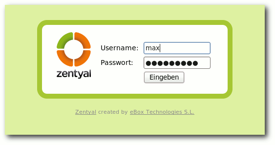
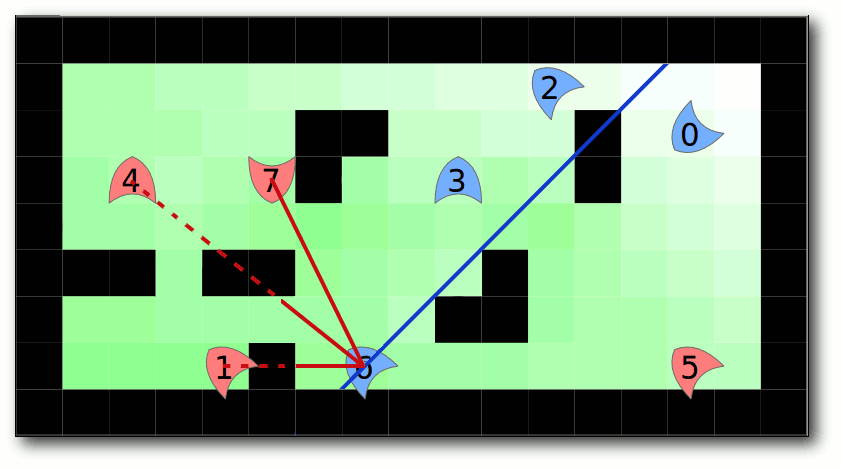
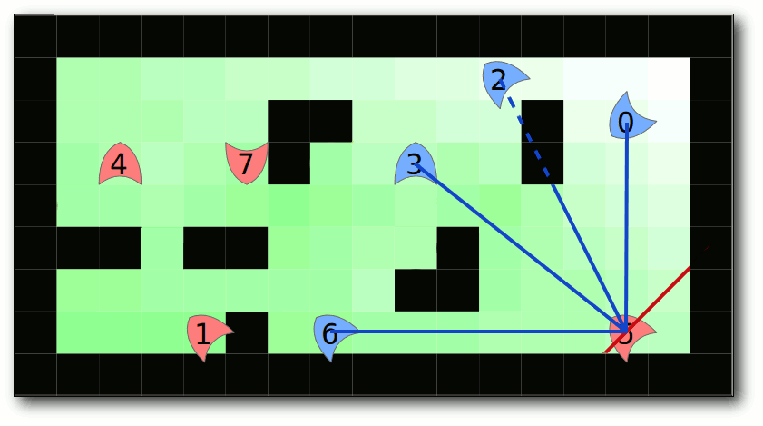

freiesMagazin November 2010 (ISSN 1867-7991)
Topthemen dieser Ausgabe
Python-Programmierung: Teil 2 – Tiefere Einblicke
Im vorherigen Teil der Python-Reihe aus freiesMagazin 10/2010 wurden erste Erfahrungen mit mathematischen Operatoren, Zeichenketten und for-Schleifen gesammelt. Im zweiten Teil sollen nun besonders Listen in Python betrachtet werden. Mit if und while werden aber auch zwei weitere Kontrollstrukturen vorgestellt. (weiterlesen)
Frogatto – Ein Retroheld im Froschgewand
Komplex gerenderte Grafiken, hohe Auflösungen, rasante Verfolgungsjagden und einen Inhalt, der dem Spieler das Maximum an Konzentration abverlangt und ihm die Nerven zerfetzt – das sind die Inhalte, die man vom wenig aussagekräftigen Titel Frogatto keinesfalls zu erwarten hat. Das Spiel hat aber durchaus andere erwähnenswerte Eigenschaften und einen besonderen, eigenen Charme. Beides sorgt letztendlich dafür, dass das Spiel näher unter die Lupe genommen werden sollte, um sich kein übereiltes Fehlurteil zu erlauben. (weiterlesen)
Auf dem Tablet serviert – Das WeTab ist massenverfügbar
Seit dem 19. September 2010 ist das Tablet der Firma WeTab GmbH nun bei Amazon und im Vertrieb der Kette Mediamarkt in Deutschland erhältlich. Die WeTab GmbH ist ein Joint Venture der 4tiitoo AG und der Neofonie GmbH. Unter dem Dach der Gesellschaft werden Produkte beider Unternehmen als Gesamtlösung zusammengeführt und vermarktet. Wesentlicher Bestandteil dabei ist der Tablet-Computer WeTab und dazugehörige Software-Komponenten. (weiterlesen)
Zum Index
Inhalt
Linux allgemein
Ubuntu 10.10
Der Oktober im Kernelrückblick
Anleitungen
Python-Programmierung: Teil 2
Software
Zentyal 2.0
Frogatto
Hardware
Das WeTab ist massenverfügbar
Community
Rezension: Network Hacking
Rückblick: Ubucon 2010 in Leipzig
Magazin
freiesMagazin-Programmierwettbewerb
Editorial
Leserbriefe
Veranstaltungen
Vorschau
Konventionen
Impressum
Zum Index
Editorial
Wettbewerb ahoi!Dritter Programmierwettbewerb gestartet
Wer auf der Webseite von freiesMagazin mitliest, hat es schon gesehen: Am 13. Oktober 2010 haben wir den dritten Programmierwettbewerb gestartet [1]. Das Thema ist dieses Mal prinzipiell etwas einfacher als beim zweiten Wettbewerb, da es ein simples Fangspiel ist, welches man als Teilnehmer umsetzen soll. Als Besonderheit haben wir den Wettbewerb bilingual umgesetzt und bieten sowohl eine deutsche [2] als auch eine englische Anleitung [3] an, welche die Spielregeln erklären. Wir haben die Hoffnung, dass wir damit etwas mehr Teilnehmer anziehen als bei den vorherigen Wettbewerben. Geholfen hat uns dabei das Full Circle Magazine, welches in ihrer Ausgabe 42 einen Bericht über den Wettbewerb veröffentlichte [4]. Der Einsendeschluss ist im Übrigen der 19. Dezember 2010. Zu gewinnen gibt es wie immer Gutscheine für Bookzilla oder Amazon, die aber nur einen kleinen Anreiz darstellen sollen. Primär soll es den Teilnehmern um den Spaß am Programmieren gehen und nicht um den schnöden Mammon.Änderungen in der Redaktion
Aus dem freiesMagazin-Team gibt es auch etwas Neues zu berichten: Leider verließ Dominik Honnef Anfang des Monats das Team. Seit anderthalb Jahren war er bei freiesMagazin tätig, einen Großteil dieser Zeit davon in der Redaktion. Wir danken Dominik für seine tatkräftige Unterstützung, Anregungen und Verbesserungen und wünschen ihm natürlich alles Gute für die Zukunft. Da die Redaktion so aber nur aus zwei Leuten bestehen würde, was vor allem bei Abstimmungen eher schlecht ist, haben wir uns einen würdigen Nachfolger ins Redaktionsteam geholt: Frank Brungräber, der bisher mit für die Korrektur verantwortlich war, unterstützt uns nun und hält Kontakt zu Autoren und Lesern. Damit ist das „Triumvirat“ wieder komplett. Und nun wünschen wir Ihnen viel Spaß mit der neuen Ausgabe. Ihre freiesMagazin-Redaktion Links[1] http://www.freiesmagazin.de/20101013-dritter-freiesmagazin-programmierwettbewerb-gestartet
[2] http://www.freiesmagazin.de/dritter_programmierwettbewerb
[3] http://www.freiesmagazin.de/third_programming_contest
[4] http://www.freiesmagazin.de/20101031-full-circle-magazine-berichtet-ueber-freiesmagazin-programmierwettbewerb
Das Editorial kommentieren
Zum Index
Ubuntu 10.10
von Hans-Joachim Baader Am 10. Oktober 2010 wurde Ubuntu 10.10 freigegeben. Dieser Artikel gibt einen Überblick über die Neuerungen mit besonderem Augenmerk auf den Desktop. Redaktioneller Hinweis: Der Artikel „Ubuntu 10.10“ erschien erstmals bei Pro-Linux [1] unter der GNU Free Documentation License [2].Vorwort
Planmäßig wie jedes halbe Jahr erschien die neue Version der Linux-Distribution Ubuntu. Die Tatsache, dass die neue Ubuntu-Version „Maverick Meerkat“ planmäßig auf den Oktober 2010 fiel und demnach die Versionsnummer 10.10 tragen würde, bewog Canonical dazu, „Perfect Ten“ zum Thema zu machen und den genauen Veröffentlichungstermin auf den ungewöhnlichen Sonntag, den 10.10.2010 zu legen. Die Veröffentlichung fand exakt am 10.10.10 um 10:10:10 Uhr UTC statt; genau zu dieser Zeit wurde auch die E-Mail mit der Ankündigung der Veröffentlichung abgesandt. Das Zahlenspiel setzt sich durch Anspielungen auf die sechsbändige Trilogie „Per Anhalter durch die Galaxis“ [3] von Douglas Adams fort, in der die Zahl 42 eine zentrale Rolle spielt. Die Binärdarstellung dieser Zahl lautet 101010. Im Gegensatz zum Vorgänger Ubuntu 10.04 (siehe „Ubuntu 10.04“, freiesMagazin 06/2010 [4]) ist die neue Version keine mit längerfristigem Support. Sie wird in allen Varianten 18 Monate mit Sicherheits- und anderen wichtigen Updates versorgt. Ein Update ohne Neuinstallation von der Version 10.04 LTS wird offiziell unterstützt. Ubuntu erscheint in mehreren Varianten, deren Hauptunterschied in den Installationsmedien und dem vorinstallierten Software-Umfang liegt. Die von Canonical herausgegebenen Varianten sind jedoch die „Desktop-Edition“ mit GNOME als Oberfläche, die „Server-Edition“ und die „Netbook-Edition“. Die weiteren offiziell unterstützten Varianten sind Kubuntu, Xubuntu, Edubuntu, Ubuntu Studio und Mythbuntu. Dieser Artikel beschränkt sich auf Ubuntu und Kubuntu. Da der Text keinen Test der Hardwarekompatibilität behandeln soll, wird auf die Erprobung auf realer Hardware verzichtet. Stattdessen werden zwei identische virtuelle Maschinen, 64 Bit, unter KVM mit jeweils 768 MB RAM verwendet.Installation
Ubuntu wird meist von einem Live-System aus, das als CD und umfangreichere DVD verfügbar ist, installiert. Ferner ist eine Installation von der „Alternate“-CD, möglich, die im Textmodus läuft, aber wesentlich mehr Flexibilität als die grafische Installation besitzt. Für Ubuntu 10.10 werden nach wie vor 256 MB RAM für den GNOME-Desktop als Mindestanforderung angegeben. Mit 512 MB und mehr läuft das System allerdings wesentlich besser. Kubuntu ist aufgrund des größeren Speicherbedarfs von KDE mit weniger als 512 MB RAM fast nicht zu benutzen – aber wer den Rechner intensiv nutzt, sollte bei den heutigen Speicherpreisen lieber gleich in 4 bis 8 GB RAM und ein 64-Bit-System investieren, sodass reichlich Platz für die Anwendungen ist. Xubuntu und die Server-Edition sollten weiterhin mit 128 MB auskommen. Für die Live-CDs sind ebenfalls mindestens 256 MB erforderlich. Aber auch hier ist das System mit 256 MB sehr langsam. Der in der Vorversion benutzte komprimierte Swap-Bereich hat sich offenbar nicht bewährt; jedenfalls ist jetzt keiner mehr vorhanden. Die Oberfläche des Live-Systems ist in Englisch mit nur wenigen deutschen Einsprengseln gehalten, auch wenn man Deutsch als Sprache vor dem Start ausgewählt hat. Man kann natürlich die deutsche Sprachunterstützung herunterladen, wenn man eine Netzverbindung hat, aber die ist beim nächsten Start des Live-Systems wieder weg. An dieser Stelle soll nur die Installation von der Desktop-CD kurz vorgestellt werden. Zu empfehlen ist allerdings die textbasierte Installation von der Alternate-CD, da in der Desktop-Variante nach wie vor die Möglichkeit fehlt, den Logical Volume Manager (LVM) zu verwenden. Die Alternate-Installation läuft fast genauso ab wie bei der grafischen Installation. Durch Boot-Optionen steht aber eine erweiterte Installation zur Verfügung, mit der man weitgehend Kontrolle über den ganzen Vorgang hat. Die grafische Installation wurde etwas umgestellt, um die Partitionierung und Paketinstallation parallel zur Abfrage der letzten Daten vornehmen zu können. Daher sind die ersten Schritte die Auswahl der Sprache, die Einstellung einiger Optionen (die neue Option, ein Update schon während der Installation vorzunehmen, wenn eine Netzverbindung besteht, und die Auswahl von unfreien Paketrepositorys) und die Partitionierung. Wählt man hier die Standardoption, ist die Partitionierung mit zwei Klicks erledigt. Es ist nun auch möglich, Treiber während der Installation hinzuzufügen.Sprachauswahl.
Will man die Partitionen manuell einstellen, lernt man einen Nachteil der umgestellten Installation kennen. Die Tastaturbelegung ist nämlich immer noch Englisch, da die Eingabe des gewünschten Tastatur-Layouts erst später erfolgt. Da man die meisten Aktionen mit der Maus erledigt, macht sich das hauptsächlich bei der Eingabe von Mount-Pfaden bemerkbar, wenn man die Taste „ / “ finden muss. Ein weiterer Nachteil der neuen Installation ist, dass es nach Abschluss der Partitionierung kein Zurück mehr gibt. Will man sich anders entscheiden, muss man das System zurücksetzen und noch einmal von vorne anfangen. Somit führt die neue Installation zu zwei Verschlechterungen für einen kaum nennenswerten Zeitgewinn. Die zusätzliche Arbeit hierfür hätte Canonical besser in Optionen wie LVM oder die Verschlüsselung der gesamten Festplatte investiert, die weiterhin nur auf der Alternate-CD zur Verfügung stehen. Von diesen Makeln abgesehen funktioniert die Partitionierung korrekt. Als Dateisystem ist ext4 (siehe „Das Dateisystem ext4“, freiesMagazin 04/2009 [5]) voreingestellt. Alternativ stehen ext3, ext2 und alle anderen Journaling-Dateisysteme zur Verfügung. Auch btrfs ist möglich, das seit Kurzem offiziell stabil ist. Allerdings warnte Michael Kofler davor, dass es durchaus noch Ungereimtheiten geben kann [6]. Wählt man ext4 oder btrfs als Dateisystem der Bootpartition, wird man darauf hingewiesen, dass der Bootloader das nicht unterstützt. Auch an das Einrichten mindestens einer Swap-Partition wird man gegebenenfalls erinnert und es wird gewarnt, wenn die Rootpartition zu klein für die Installation ist. Dabei warnt das Programm aber auch, wenn man die Root-Partition klein macht und eine separate, ausreichend große Partition für /usr anlegt. Das kann das Tool nicht erkennen, was aber nicht schlimm ist, da man trotzdem fortsetzen kann.
Zeitzonenauswahl.
Direkt nach der Definition der Partitionen beginnt der Installer mit der Partitionierung und der Installation der Pakete im Hintergrund. Ein Fortschrittsbalken zeigt ab diesem Zeitpunkt den Stand der Installation an. Parallel dazu kann man die Zeitzone, die man verwenden möchte, auswählen und danach das gewünschte Tastaturlayout einstellen.
Tastenbelegung.
Im letzten Schritt gibt man seinen Namen, Anmeldenamen, Passwort und den Computernamen ein. Wenn zuvor bereits per DHCP ein Name ermittelt werden konnte, wird dieser als Vorgabe angezeigt. Wenn erkannt wird, dass die Installation in einer virtuellen Maschine läuft, wird dagegen der Name „benutzer-virtual-machine“ vorgegeben. Man kann nun angeben, dass Daten im Home-Verzeichnis verschlüsselt werden sollen. Die Auswahl von Bootloader-Optionen wurde dagegen gestrichen. Während man das Ende der Installation abwartet, kann man noch einige Tipps zu Ubuntu ansehen.
Name und Passwort.
Am Ende der Installation kam es im Test in zwei Fällen zu einem Absturz des Installationsprogramms. Irgendein Python-Plug-in verbrauchte vermutlich zu viel Speicher, sodass der Kernel anfing, Prozesse zu killen und schließlich auch den Installer erwischte. Das installierte System war danach nicht bootfähig. Es ist unklar, unter welchen Bedingungen das Problem auftritt, denn eine Wiederholung der Installation klappte.
Tipps während der Installation.
Laufender Betrieb
Einige bedeutende Änderungen, die für alle Desktops gleichermaßen gelten, sind der aktualisierte Linux-Kernel auf Basis von Version 2.6.35.4 und die neue Schriftart „Ubuntu“ [7]. Ohne die neue Schrift wären überhaupt keine bedeutenden Änderungen an den Desktops GNOME und KDE auszumachen. Aber natürlich gab es kleinere Erweiterungen der Funktionalität. Wie gewohnt hat Root keinen direkten Zugang zum System. Zugang zum Root-Account ist aber über das Kommando sudo vorhanden. Damit kann man jeden beliebigen Befehl ausführen, nachdem man sein eigenes Passwort eingegeben hat. Wenn man, nachdem man als Root eingeloggt ist, ein Passwort vergibt, ist auch das direkte Root-Login möglich. Der GNOME-Desktop benötigt mit einem Terminalfenster ohne weitere offene Programme etwa 220 MB, nachdem in der Vorversion noch 320 MB gemessen wurden. Davon wird ein Teil mit der Zeit in den Swap ausgelagert. Dies entspricht wieder ungefähr früheren Versionen. KDE benötigt etwa 390 MB und scheint mit wachsender Laufzeit mehr zu belegen. So ist KDE in 512 MB RAM subjektiv auch deutlich träger als GNOME. Anwendungen benötigen generell länger zum Starten, unabhängig von ihrer Größe. Beispielsweise benötigte der maximal 30 MB große OpenOffice.org Writer beim ersten Start unter KDE 20 Sekunden, unter GNOME nur 10. Nach Beenden und erneutem Start waren es unter KDE noch 4 Sekunden, unter GNOME 2. Ab etwa 768 MB RAM sind beide Systeme wieder gleichauf. KDE sollte man also, wie schon gesagt, besser nicht nutzen, wenn man nur 512 MB RAM oder weniger zur Verfügung hat. Auch das Abschalten vieler Effekte in KDE ist ratsam, da sie durch ihre eingebauten Verzögerungen die Arbeit behindern. Den Speicherverbrauch der Desktops zu messen ist nicht einfach. Schwankungen von 20 MB und mehr nach oben und unten sind möglich, je nach dem Zeitpunkt der Messung. Dies erklärt sich teilweise daraus, dass manche Programme bei ihrem Start einen oder mehrere Dienste starten. Diese Dienste werden bei Nichtbenutzung nach einiger Zeit teilweise wieder beendet. Bei den obigen Angaben wurde daher der ungefähre Mittelwert ermittelt.Shotwell auf dem GNOME-Desktop.
Die neue Version 2.32.0 von GNOME [8] bringt den Benutzern das gewohnte Erscheinungsbild ohne böse Überraschungen. Der E-Mail-Client Evolution wurde auf die Version von GNOME 2.30.3 aktualisiert, die viel schneller als die Version in Ubuntu 10.04 LTS sein soll. Die Foto-Verwaltung obliegt nun Shotwell, das F-Spot in der Standardinstallation ablöst. Der Twitter-Client Gwibber wurde an die letzten Änderungen des Twitter-Authentifizierung angepasst. Der Sound-Indikator enthält Steuerelemente für das Abspielen von Musik. Obwohl der Standard-Browser von GNOME Epiphany ist, bleibt es unter Ubuntu bei Firefox, jetzt in Version 3.6.10 (inzwischen aktualisiert auf 3.6.11). Als Office-Suite ist OpenOffice.org 3.2.1 installiert. Der Online-Dienst Ubuntu One wurde besser in den Desktop integriert. Registrierung und Anmeldung wurden erneuert. Im Dateimanager Nautilus wurde die Verwaltung der Einstellungen zur Synchronisation von Ordnern verbessert und die Geschwindigkeit der Synchronisation gesteigert. Im Ubuntu One Music Store kann man Links auf Musik für andere Benutzer zugänglich machen. Version 4.5.1 von KDE [9] soll zum einen gegenüber KDE 4.4 mehr Stabilität und Feinschliff, zum anderen einige neue Funktionen bringen. Neu dabei sind der Caching-Mechanismus KsharedDataCache, ein einheitliches Aussehen des Benachrichtigungsbereichs auch zwischen verschiedenen Programmen und Toolkits, die Benutzung der Webkit-Engine in Konqueror, ein neuer Platzierungsmodus (KWin-Tiling) im Window-Manager,eine optionale Nutzung von PulseAudio in Phonon und Verbesserungen in zahlreichen Anwendungen. Auch unter KDE wird OpenOffice.org genutzt. Als Webbrowser kommt die Neuentwicklung Rekonq 0.6.1 zum Einsatz, die die Webkit-Engine nutzt und laut den Entwicklern den verfügbaren Bildschirmplatz optimieren soll. Das Programm erinnert mit seinem auf einen einzelnen Button reduzierten Menü entschieden an Chrome. Rekonq verfügt über Funktionen wie Zoom, privaten Modus und Entwicklerfunktionen, lässt jedoch eine detaillierte Kontrolle über JavaScript- und Cookie-Einstellungen, Plug-ins und Erweiterungen vermissen. Ohne Funktionen, die annähernd an die Mächtigkeit von Firefox oder Konqueror herankommen, dürfte er bald genauso vergessen sein wie Arora, von dem man auch nichts mehr hört.
Rekonq auf dem KDE-Desktop.
Schlimm sind neben der Tatsache, dass der Dateibetrachter Okular bei jeder PDF-Datei abstürzte, auch die neuen Icons in der Systemleiste. Eine Schere als Symbol für die Zwischenablage geht einfach gar nicht. Und das Symbol für den Network Manager soll wohl eine Ethernet-Buchse zeigen, was aber kaum erkennbar ist. Gegenüber den früheren Icons ist die Wahl der jetzigen Icons schlecht. Nach einer längeren Sitzung funktionierte zudem das Herunterfahren nicht mehr.
Multimedia im Browser und auf dem Desktop
Auf der überarbeiteten Startseite von Firefox ist weiter Google die Standard-Suchmaschine. Auch die Bezeichnung in der About-Box „Mozilla Firefox für Ubuntu – canonical 1.0” ist geblieben. Mehrere Plug-ins zum Abspielen von Videos in freien Formaten sind vorinstalliert – WebM [10] gehört noch nicht dazu. Firefox enthält die vorinstallierte Erweiterung „Ubuntu Firefox Modifications“ jetzt in Version 0.9rc2. Darin ist der bereits bekannte Plug-in-Finder-Service enthalten. Will man beispielsweise ein Video in einer Webseite abspielen, lassen sich komfortabel passende Plug-ins finden und installieren. Mit Flash geht das so nicht. In der 64-Bit-Version ist klar, dass das Adobe-Flash-Plug-in nicht zur Verfügung steht. Warum Ubuntu hier aber nicht das Gnash-Plug-in anbietet, ist rätselhaft, denn es funktioniert mit den meisten Flash-Videos gut. Man kann es manuell aus dem Paket mozilla-plugin-gnash installieren.Startseite von Firefox.
Auch in den bekannten Anwendungen RhythmBox und Totem ließen sich GStreamer-Plug-ins, die die standardmäßig nicht unterstützbaren Formate kennen, wie gewohnt problemlos installieren. Fast jedes Audio- und Video-Format ließ sich damit abspielen. Unter KDE ist Amarok der Standard-Audioplayer. MP3- und andere Audiodateien lassen sich ohne weiteres abspielen. Der Standard-Videoplayer ist Dragonplayer. In diesem funktioniert zunächst einmal gar nichts. Leider konnten sich die Entwickler immer noch nicht dazu bewegen, dieses Nichtfunktionieren mit einer Meldung zu kommentieren. Erst wenn man das Paket libxine1-ffmpeg installiert, kann man Videos in allen gängigen Formaten abspielen. Alternativ kann man andere Player wie z. B. smplayer installieren, mit denen ebenfalls alles funktioniert. Im Dateimanager Dolphin fehlt weiterhin eine Dateizuordnung von Dateien mit dem Suffix .flv.
Paketverwaltung und Updates
Das Hauptprogramm zur Paketverwaltung ist das weiter verbesserte Software-Center, das es weiterhin nur unter GNOME gibt. Es ist in der Art eines Anwendungsstores aufgebaut, verwaltet aber auch die installierten Anwendungen. In der Kategorie-Ansicht gibt es nun auch Unterkategorien. Die für diesen Bereich verfügbare Software wird dann als Liste angezeigt. Mit der Suche kann man die Auswahl weiter einschränken. Klickt man ein Softwarepaket in der Liste an, erhält man Buttons zum Installieren (bei installierten Paketen einen zum Entfernen) und einen Link zum Aufrufen der Webseite. Ferner werden eine Beschreibung, ein Screenshot und weitere Informationen angezeigt.Software-Center in Ubuntu.
Die bisher fehlenden Funktionen für die Verwaltung der Paketquellen wurden hinzugefügt. Damit ist das Software-Center zwar immer noch kein vollständiger Ersatz für Synaptic, aber es enthält alle Funktionen, die von weniger technischen Anwendern benötigt werden. Zudem wurde es poliert und enthält zwei neue Bereiche für vorgestellte und neu hinzugekommene Anwendungen. Nun kann sich auch kostenpflichtige Software im Software Center befinden. Zur Zeit ist nur ein einziges solches Paket vorhanden, der Fluendo DVD Player (siehe „Im Test: Fluendo DVD Player“, freiesMagazin 10/2010 [11]). Es sollen aber im Laufe der Zeit mehr werden. Ferner kann man sich die Historie der Paketinstallationen ansehen. Das Programm kann jetzt auch Plug-ins nutzen. Technische Einzelheiten werden standardmäßig vor den Benutzern verborgen. Das Software-Center macht es nun auch einfach, Erweiterungen zu Programmen zu finden. Kennt das Center solche Erweiterungen, werden sie in der Detailansicht angezeigt und können durch Setzen eines Häkchens zusammen mit dem Programm oder zusätzlich installiert werden. Die offiziellen Repositorys von Ubuntu 10.10 sind weiterhin main, universe, multiverse und restricted. Letzteres ist das Archiv, in dem sich unterstützte, aber unfreie Pakete befinden. Darunter befinden sich die Grafikkarten-Treiber z. B. von NVIDIA, Firmware-Pakete und Treiber, die nicht unter vollständig freien Lizenzen stehen. Sie können von Ubuntu grundsätzlich nicht so wie die anderen Pakete unterstützt werden, da der Quellcode teilweise nicht zugänglich ist. Im Gegensatz zu main wird Software, die im Repository universe zu finden ist, nicht offiziell unterstützt. Die Softwarepakete in universe sind frei, während jene in multiverse unfrei sind. Daneben existiert noch das Repository partner, das kostenlos erhältliche Software von Partnerunternehmen beherbergt. Unter KDE wird weiterhin KPackageKit zum Verwalten und Aktualisieren von Software verwendet. Im Gegensatz zum Software-Center ist es eine umfassende Lösung wie Synaptic. Im Vergleich zur letzten Version scheint sich kaum etwas geändert zu haben, lediglich im Hintergrund wird nun QApt Batch statt install-package verwendet. Aus Benutzersicht ändert das nichts und so gelten die damaligen Kritikpunkte weiterhin. Die Auswahl der Funktionen „Software finden und entfernen“, „Softwareaktualisierungen“ und „Einstellungen“ hätte leicht in einem Menü erfolgen können, anstatt so viel Platz auf dem Bildschirm zu verschwenden. Die Kombination von Suchbegriffen, Filtern und Bereichsauswahl wirkt weiterhin unlogisch und nicht intuitiv. Die Oberfläche von KPackageKit wirkt immer noch wie ein schlechter Prototyp. Die zugrundeliegenden Funktionen scheinen dagegen einwandfrei zu arbeiten.
KPackageKit in Kubuntu.
Fazit
Ubuntu 10.10 ist eine gelungene Distribution, die sich nicht sehr von der Vorgängerversion unterscheidet. Als größte Änderungen sind die neue grafische Installation und die neue Schriftart „Ubuntu“ zu nennen. Dabei erweist sich gerade die geänderte Installation als nicht ausgegoren und lässt den Wunsch aufkommen, der Hersteller hätte seine Prioritäten anders gesetzt. Auch die neue Schriftart wird nicht unbedingt den Geschmack jedes Benutzers treffen, aber es stehen ja Alternativen zur Verfügung. Schriften, wie auch die Optik des Desktops und der Icons, sind nun einmal Geschmackssache und gehen daher natürlich nicht in die Bewertung ein. Abgesehen vom Installer gibt es an der GNOME-Variante von Ubuntu daher nicht viel auszusetzen. Unterm Strich gilt also für Ubuntu wie für die meisten freien Programme: Die neueste Version ist meist die beste. Wer dagegen KDE unter Ubuntu (bzw. Kubuntu) nutzen möchte, sollte erstens noch einige Wochen warten, bis die gröbsten Probleme beseitigt sind, und zweitens sich darauf einstellen, einige der installierten Programme durch andere zu ersetzen. Dies mag für die anderen Varianten genauso gelten, aber unter KDE waren Probleme eher auffällig. Es wäre nun übertrieben, von unbenutzbar oder Ähnlichem zu sprechen. Rekonq als Standard-Browser und KPackageKit als Paketverwaltung sind vielleicht auch in Ordnung für geringere Ansprüche; wer Alternativen will, kann sie installieren. Der Absturz in Okular ist dagegen ärgerlich. Links[1] http://www.pro-linux.de/artikel/2/1468/ubuntu-1010.html
[2] http://www.gnu.org/copyleft/fdl.html
[3] http://de.wikipedia.org/wiki/Per\_Anhalter\_durch\_die\_Galaxis
[4] http://www.freiesmagazin.de/freiesMagazin-2010-06
[5] http://www.freiesmagazin.de/freiesMagazin-2009-04
[6] http://www.pro-linux.de/artikel/2/1456/btrfs-linux-dateisystem-der-zukunft.html
[7] http://www.pro-linux.de/news/1/16230/ubuntu-schriftart-soll-neue-qualitaetsmassstaebe-setzen.html
[8] http://www.pro-linux.de/news/1/16219/gnome-232-veroeffentlicht.html
[9] http://www.pro-linux.de/news/1/16022/kde-sc-450-mit-neuen-funktionen-freigegeben.html
[10] http://www.pro-linux.de/news/1/15793/optimierung-von-webm-hat-begonnen.html
[11] http://www.freiesmagazin.de/freiesMagazin-2010-10
| Autoreninformation |
| Hans-Joachim Baader befasst sich seit 1993 mit Linux. 1994 schloss er sein Informatikstudium erfolgreich ab, machte die Softwareentwicklung zum Beruf und ist einer der Betreiber von Pro-Linux.de. |
Zum Index
Der Oktober im Kernelrückblick
von Mathias Menzer Basis aller Distributionen ist der Linux-Kernel, der fortwährend weiterentwickelt wird. Welche Geräte in einem halben Jahr unterstützt werden und welche Funktionen neu hinzukommen, erfährt man, wenn man den aktuellen Entwickler-Kernel im Auge behält.Der Weg zum Kernel 2.6.36
Zwei Vorabversionen waren noch notwendig, bevor Torvalds den Kernel 2.6.36 endgültig veröffentlichen konnte. Der -rc7 [1] brachte außer dem Hoffnungsschimmer eines baldigen finalen Releases hauptsächlich kleinere Korrekturen, zum Teil im Bereich der Grafik-Komponente DRM (Direct Rendering Manager [2]), jedoch auch am Dateisystem xfs. Mit dem -rc8 [3] bekam der neue Kernel dann auch seinen Namen „Flesh-Eating Bats with Fangs“ (Fleischfressende Fledermäuse mit Reißzähnen). Anscheinend hatte eine Fledermaus mit siebeneinhalb Zentimeter langen Zähnen („three-inch-long fangs“), die sich in sein Haus verirrt hatte, Torvalds entsprechend beeindruckt, um ein eigenes Kernel-Release gewidmet zu bekommen [4]. Außer Aktualisierungen der Dokumentation für den Treiber e1000e und dessen älteren Bruder e1000 finden sich kleinere Korrekturen quer durch den ganzen Kernel. Der Schritt zu 2.6.36 war ebenfalls in erster Linie von letzten, kleinen Korrekturen begleitet [5].Was bringt 2.6.36?
Die erste neue Funktion von 2.6.36 wurde gleich wieder deaktiviert. „fanotify“ stellt eine Schnittstelle bereit, die Benachrichtigungen über Änderungen am Dateisystem an Anwendungen und Prozesse versenden kann (siehe „Der August im Kernelrückblick“, freiesMagazin 09/2010 [6]) und langfristig das seit fünf Jahren erprobte „inotify“ ersetzen soll. Allerdings dauern die Diskussionen unter den Entwicklern über die letztendliche Ausgestaltung der ABI [7] noch an, weshalb man sich letztlich dazu entschloss, diese Funktion vorerst ruhen zu lassen. Nicht abgeschaltet wurden dagegen die Verbesserungen an „Workqueue“. Diese Funktion verwaltet Funktionsaufrufe für den Kernel und stellt sie zur späteren Ausführung in eine Warteschlange. Die bisherige Gestaltung von Workqueue erzeugte durch eine fehlende Kontrollfunktion teilweise mehr Warteschlangen als Prozessoren oder Kerne im System zur Verfügung stehen und führte dazu, dass sich deren Prozesse gegenseitig im Weg standen. Ein neuer Pool-Manager soll dies künftig verhindern und gleichzeitig Codeteile ablösen, die für Spezialfälle entwickelt wurden, die durch die alte Workqueue-Implementierung nicht behandelt werden konnten. Eine eigentlich ungeliebte Komponente ist der „Out-Of-Memory-Killer“ (OOM). Anders als der martialische Name vermuten lässt, handelt es sich hierbei jedoch nicht um ein wahllos marodierendes Unterprogramm, sondern mehr um eine meist still im Hintergrund wartende Komponente, die im Falle eines vollständig belegten virtuellen Speichers Prozesse beendet, um den fortlaufenden Betrieb des Systems zu gewährleisten. Hin und wieder trifft OOM eine schlechte Wahl und opfert eigentlich hilfreiche Prozesse, sodass der durchgehende Betrieb mit Einschränkungen oder gar Instabilität erkauft wird. Die Algorithmen zur Auswahl der zu opfernden Prozesse wurden von dem bei Google beschäftigten Entwickler David Rientjes verfeinert, der seine Änderungen nun nach mehreren Anläufen in den stabilen Kernel-Zweig einbringen konnte. Ebenfalls auf Situationen mit Speicherengpässen ausgerichtet ist eine weitere Verbesserung: Steht nur noch wenig Speicher zur Verfügung und es erfolgen gleichzeitig Schreibzugriffe auf ein sehr langsames Medium wie z. B. eine langsame USB-Festplatte, kann es zum völligen Stillstand des Systems aus Anwendersicht kommen. Der Intel-Entwickler Wu Fengguang führte eine Überprüfung ein, ob scheinbar belegte Speicherbereiche in einer solchen Situation bereinigt werden können ohne die Tätigkeit des Kernel Swap Deamon (kswapd) zu behindern, und verringert dadurch die Wahrscheinlichkeit, dass solche Fälle auftreten. Der in 2.6.35 hinzugekommene Kernel-Debugger KDB lässt sich nun auch aus einer graphischen Umgebung heraus nutzen, indem mittels der Tastenkombination Sysreq-g [8] die KDB-Konsole aufgerufen wird. Hierzu wird Kernel Mode Setting (KMS) genutzt, jedoch derzeit nur für Grafik-Chipsätze von Intel. Zu den bereits unterstützten Architekturen kommt nun die von Tilera entwickelte Tile64 [9] hinzu. Deren Prozessoren besitzen mehrere Kerne - nämlich 64 Stück - die in einer schachbrettartigen Struktur auf dem Prozessor-Die angeordnet sind, über eigene L1- und L2-Caches verfügen und sich zusammen verschiedene Schnittstellen wie Gigabit-Ethernet und PCIe sowie vier DDR2-Speichercontroller teilen. Obwohl die Prozessoren nur bis 900 MHz getaktet werden, soll dieser Aufbau eine sehr hohe Rechenleistung mit guter Energieeffizienz kombinieren. Um die neuen Funktionen von Intels Core i3/i5-Reihe mit integrierter Grafik besser nutzen zu können, wurde „Intelligent Power Sharing“ implementiert. Hierbei wird die innerhalb der Leistungs- und Temperaturgrenzen der CPU maximal mögliche Leistung zwischen CPU und Grafik-Komponente so ausbalanciert, dass sich das Gesamtsystem innerhalb der TDP (Thermal Design Power), ein Grenzwert für die maximal mögliche Wärmeabfuhr eines Systems, bewegt. Lange schon wird „AppArmor“, ein von einigen Distributoren bereits ausgiebig genutztes Werkzeug zur rollenbasierten Umsetzung von Zugriffbeschränkungen (Mandatory Access Control [10]) gepflegt und weiterentwickelt. Nun folgten die Kernel-Entwickler den Nutzern und nahmen AppArmor in den offiziellen Kernel auf. Neben diesen Neuerungen wurden viele weitere Verbesserungen vorgenommen, so kann FS-Cache nun neben NFS und AFS auch auf das Netzwerk-Dateisystem CIFS aufsetzen und dessen Daten für schnellere Zugriffe zwischenspeichern. Verschiedene Treiber kamen hinzu und die Speicherverwaltung des Virtualisierungs-Werkzeugs KVM wurde überarbeitet. Wie immer liefert die englischsprachige Seite Kernel Newbies [11] einen ausführlichen Überblick.Entwicklung von 2.6.37 gestartet
Bereits am 1. November stellte Torvalds 2.6.37-rc1 [12] zur Verfügung. Er hebt hervor, dass nun die Kernkomponenten auf den Big Kernel Lock (BKL) verzichten, ein zunehmend ungeliebter Mechanismus zum Verhindern gleichzeitiger Zugriffe auf den Kernel. Es sei nun möglich, den Kernel selbst ohne Unterstützung für BKL zu kompilieren, trotzdem nutzen noch einige Treiber und Systeme diesen Locking-Mechanismus wie zum Beispiel die V4L-Umgebung, die für Video-Aufnahme und -Wiedergabe genutzt wird. Die Freigabe der neuen Vorabversion nahm Torvalds vom aktuellen Linux Kernel Summit [13] in Cambridge vor, der sich die diesjährige Linux Plumbers Conference [14] direkt anschließt. Da viele der Hauptentwickler auf diesen beiden Veranstaltungen zu finden sind, dürften sich die Änderungen in dieser Woche in Grenzen halten. Absprachen, strategische Entscheidungen und auch die Koordinierung mit anderen Projekten und Komponenten rund um Linux stehen hier erst einmal im Vordergrund. Links[1] http://lkml.org/lkml/2010/10/6/406
[2] http://de.wikipedia.org/wiki/Direct_Rendering_Manager
[3] http://git.kernel.org/?p=linux/kernel/git/torvalds/linux-2.6.git;a=commitdiff;h=cd07202cc8262e1669edff0d97715f3dd9260917
[4] http://torvalds-family.blogspot.com/2010/10/early-halloween-guest.html
[5] http://lkml.org/lkml/2010/10/20/409
[6] http://www.freiesmagazin.de/freiesMagazin-2010-09
[7] http://de.wikipedia.org/wiki/Binärschnittstelle
[8] http://de.wikipedia.org/wiki/Systemabfrage-Taste
[9] http://en.wikipedia.org/wiki/TILE64
[10] http://de.wikipedia.org/wiki/Mandatory_Access_Control
[11] http://kernelnewbies.org/Linux_2_6_36
[12] http://lkml.org/lkml/2010/11/1/82
[13] https://events.linuxfoundation.org/events/linux-kernel-summit
[14] http://www.linuxplumbersconf.org/2010/
| Autoreninformation |
| Mathias Menzer wirft gerne einen Blick auf die Kernel-Entwicklung, um mehr über die Funktion von Linux zu erfahren. |
Zum Index
Python-Programmierung: Teil 2 – Tiefere Einblicke
von Daniel Nögel Im vorherigen Teil der Python-Reihe (freiesMagazin 10/2010 [1]) wurden erste Erfahrungen mit mathematischen Operatoren, Zeichenketten und for-Schleifen gesammelt. Im zweiten Teil sollen nun besonders Listen in Python betrachtet werden. Mit if und while werden aber auch zwei weitere Kontrollstrukturen vorgestellt.Korrekturen und Ergänzungen
Im ersten Teil wurde bereits angesprochen, dass manche Spracheigenschaften von Python sich ab Version 3.x geändert haben. Dazu gehören insbesondere die Zeichenketten. Erst ab 3.x arbeitet Python immer mit Unicode-Zeichenketten. Davor muss die Verwendung von Unicode bei der Erstellung von Zeichenketten erzwungen werden. Unterbleibt dies, können schnell schwer zu ermittelnde Probleme auftreten. Auch Zeichenketten aus Dateien und anderen Quellen sollten so früh wie möglich in Unicode umgewandelt werden. Ab Python 3 muss sich der Entwickler darum nicht mehr kümmern. Eine Unicode-Zeichenkette wird in Python 2.x durch das Voranstellen eines u vor die Zeichenkette oder den Aufruf der Funktion unicode() erstellt [2] [3] [4]:
u"Ich bin ein Unicode-String"
unicode("Auch ich werde eine Unicode-Zeichenkette")
"Bei Python-Versionen < 3 bin ich ein normaler Byte-String"
|
>>> print("Hallo Welt")
|
>>> print "Hallo Welt" |
Operatoren
Bevor nun in den nächsten Abschnitten if- und while-Blöcke behandelt werden, sollen zuerst einige Operatoren besprochen werden. Operatoren sind – vereinfacht gesagt – (mathematische) Vorschriften, durch die aus zwei Objekten ein neues Objekt gebildet wird.| Eine Auswahl von Operatoren in Python | ||
| Operator | Typ | Funktion |
| +, -, *, / | Mathematisch | Addition, Subtraktion, Multiplikation, Division |
| ** | Mathematisch | Potenzierung |
| <, >, <=, >= | Vergleich | kleiner als, größer als, kleiner als oder gleich, größer als oder gleich |
| == | Vergleich | gleich |
| != | Vergleich | ungleich |
| = | Zuweisung | weist einen Wert zu |
| in | Listen-Operator/ Mitgliedschaftstest | testet, ob der rechte Operand Mitglied im linken Operanden ist |
| and | Bool. Operator | Konjunktion, logisches Und |
| or | Bool. Operator | Disjunktion, logisches Oder |
| not | Bool. Operator | Negation, logische Verneinung |
if-Anweisung
if-Blöcke bieten die Möglichkeit, das Ausführen eines bestimmten Code-Teiles von einer oder mehreren Bedingungen abhängig zu machen. In dem Kopf des if-Blockes wird die Bedingung für die Ausführung definiert, also beispielsweise:
number = 5 if number > 3: print u"Zahl groesser als 3" |
number = 20 if number > 10 and number < 40: print u"Zahl liegt zwischen 10 und 40" |
good_looking = False rich = True if good_looking == True or rich == True: print u"Heirate mich!" |
if good_looking or rich: print u"Heirate mich!" |
if number < 10: print u"Kleiner 10" elif number < 20: print u"Kleiner 20" else: print u"Groesser oder gleich 20" |
while-Schleife
Eine weitere wichtige Kontrollstruktur in Python ist die while-Schleife. So lange die im Schleifenkopf definierten Bedingungen wahr sind, wird der Schleifenrumpf ausgeführt. Ein sehr einfaches Beispiel ist folgende Endlosschleife:
while True: raw_input(u"Wie war Ihr Name noch gleich?") |
names = [] running = True while running: user_input = unicode(raw_input(u"Geben Sie einen Namen ein oder 'exit' zum Beenden > ")) if user_input == u"exit": running = False else: names.append(user_input) print u"Sie haben folgende Namen eingegeben:" print names |
Vier verschiedene Namen werden eingegeben.
Wichtig ist hier die Funktion unicode(): Sie wandelt in Python 2.x die Eingabe des Benutzers in Unicode um. Da in Python 3.x von Haus aus mit Unicode-Zeichenketten gearbeitet wird, gibt es diese Funktion dort nicht mehr. Hinweis: Nutzer von Python 3 verwenden statt raw_input lediglich input.
Zwischenfazit: Kontrollstrukturen
Bisher wurde folgende Kontrollstrukturen behandelt: if, for und while. Für diese Strukturen gilt:- Jede Kontrollstruktur besteht aus einem Kopf, der die Ausführungsbedingungen definiert und einem Rumpf, der ausgeführt werden soll.
- Der Kopf einer Kontrollstruktur wird immer mit einem Doppelpunkt abgeschlossen.
- Der Rumpf einer Kontrollstruktur muss immer um eine Ebene eingerückt werden.
- Die Einrückungen müssen immer gleichmäßig sein.
if username == u"Bernd": if password == u"xy": print u"Alles ok" else: print u"Password falsch" else: print u"Benutzername falsch" |
Listen
In Teil 1 dieser Einführung wurde mit der Funktion range() eine Liste von 0 bis 9 generiert. Hier soll nun abschließend näher auf Listen eingegangen werden. Bei Listen handelt es sich um einen Datentyp, der beliebige andere Datentypen verwalten kann (sogar gemischt) – gewissermaßen also ein Aktenschrank für Zeichenketten, Zahlen und alle möglichen anderen Objekte, die in Python vorkommen (sogar Listen lassen sich in Listen ablegen, so dass verschachtelte Listen möglich sind) [8]. Listen werden in Python mit eckigen Klammern ([ und ]) gekennzeichnet. Sie sind sehr leicht zu erstellen:
>>> persons = [] >>> type(persons) <type 'list'> >>> persons = list() >>> type(persons) <type 'list'> >>>persons = [u"Peter", u"Hermann", u"Simon"] |
>>> persons = [u"Peter", u"Hermann", u"Simon"] >>> persons.append(u"Carla") >>> persons.append(u"Hermann") >>> persons [u'Peter', u'Hermann', u'Simon', u'Carla', u'Hermann'] >>> persons.remove(u"Hermann") >>> persons [u'Peter', u'Simon', u'Carla', u'Hermann'] |
>>> persons = [u"Peter", u"Hermann", u"Hermann"] >>> while u"Hermann" in persons: >>> persons.remove(u"Hermann") >>> print persons ['Peter'] |
>>> persons = [u"Peter", u"Hermann", u"Simon"] >>> persons.append(u"Carla") >>> persons.remove(u"Hermann") >>> print persons [u'Peter', u'Simon', u'Carla'] >>> persons.remove(u"Heidi") Traceback (most recent call last): File "<stdin>", line 1, in <module> ValueError: list.remove(x): x not in list |
if u"Heidi" in persons: persons.remove(u"Heidi") |
Listen-Indizes
Beim Umgang mit Listen sollte man wissen, dass Python die Listeneinträge mit einem sogenannten „Index“ verwaltet. Jedem Listeneintrag wird mit 0 beginnend eine eindeutige Zahl zugewiesen. Der erste Eintrag wird also mit 0 angesprochen, der zweite Eintrag mit 1 usw. So ist es sehr leicht, auf einzelne Einträge zuzugreifen:
>>> letters = [u"a", u"b", u"c"] >>> letters[1] u"b" |
>>> letters[-3] u"a" |
Weitere Listen-Methoden
Die gerade besprochenen Indizes spielen auch bei bestimmten Methoden von Listen eine Rolle: So gibt es mit insert() und pop() die Möglichkeit, Einträge an einer bestimmten Stelle der Liste einzufügen oder zu entfernen:
>>> letters = [u"a", u"c", u"e"] >>> letters.insert(1, u"b") >>> letters [u"a", u"b", u"c", u"e"] >>> letters.insert(3, u"d") >>> letters [u"a", u"b", u"c", u"d", u"e"] >>> letters.pop() u"e" >>> letters [u"a", u"b", u"c", u"d"] >>> letters.pop(2) u"c" >>> letters [u"a", u"b", u"d"] |
Slicing
Sehr wichtig für Listen ist auch das Slicing – also das „Zerschneiden“. Mit dem slicing-Operator können einzelne Elemente oder Ausschnitte von Listen ausgelesen werden. Der Operator sieht dabei wie folgt aus:
[von:bis] |
>>> li = [u"a", u"b", u"c", u"d", u"e"] >>> li[0:3] [u"a", u"b", u"c"] >>> li[2:5] [u"c", u"d", u"e"] |
>>> li[0:-1] [u"a", u"b", u"c", u"d"] >>> li[0:-2] [u"a", u"b", u"c" ] >>> li[1:-2] [u"b", u"c"] |
Abkürzen erlaubt
Soll der erste Schnitt gleich am Anfang der Liste gesetzt werden, muss nicht nicht immer 0 als Startpunkt gesetzt werden:
>>> li = [u"a", u"b", u"c", u"d", u"e"] >>> li[:3] |
>>> li[2:] [u"c", u"d", u"e"] |
>>> li[:] |
Listen durch Slices verändern
Bisher wurde nur lesend auf verschiedene Listen-Indizes zugegriffen: Die Ursprungsliste wurde dabei jedoch nie verändert. Mit dem Zuweisungsoperator lassen sich aber auch einzelne Indizes überschreiben oder ganze Bereiche einfügen:
>>> li = [u"a", u"b", u"c"] >>> li[2] = u"e" >>> li [u'a', u'b', u'e'] >>> li[2:2] = [u"c", u"d"] >>> li [u'a', u'b', u'c', u'd', u'e'] >>> li[3:] = [1, 2, 3] >>> li [u'a', u'b', u'c', 1, 2, 3] |
Ein kleines Beispiel
Das folgende Beispiel setzt einige der hier erlernten Techniken ein.
#!/usr/bin/env python # coding: utf-8 allowed_tries = 5 counter = 1 users = [u"Karl", u"Willi", u"Joe"] passwords = [u"karl123", u"willi456", u"joe789"] while counter <= allowed_tries: username = unicode(raw_input(u"Bitte geben sie ihren Benutzernamen ein: ")) password = unicode(raw_input(u"Bitte geben sie ihr Passwort ein: ")) if not username in users: print u"Dieser Benutzer existiert nicht!" else: idx = users.index(username) if passwords[idx] == password: print u"Erfolgreich eingeloggt!" break else: print u"Sie haben ein falches Passwort eingegeben" counter += 1 if counter > allowed_tries: print u"Sie haben es zu oft versucht!" |
[1] http://www.freiesmagazin.de/freiesMagazin-2010-10
[2] http://docs.python.org/howto/unicode.html
[3] http://wiki.python-forum.de/Von%20Umlauten,%20Unicode%20und%20Encodings
[4] http://wiki.python.de/User%20Group%20M%C3%BCnchen?action=AttachFile&do=view&target=unicode-folien.pdf
[5] http://de.wikipedia.org/wiki/Boolesche\_Algebra
[6] http://abop-german.berlios.de/read/operators.html
[7] http://docs.python.org/py3k/reference/compound\_stmts.html
[8] http://docs.python.org/faq/design.html#how-are-lists-implemented
[9] http://docs.python.org/tutorial/datastructures.html#more-on-lists
| Autoreninformation |
| Daniel Nögel beschäftigt sich seit drei Jahren mit Python. Ihn überzeugt besonders die intuitive Syntax und die Vielzahl der unterstützten Bibliotheken, die Python auf dem Linux-Desktop zu einem wahren Multitalent machen. |
Zum Index
Zentyal 2.0: Eine Linux-Alternative zum Windows Small Business Server
von José Antonio Calvo Die Software Zentyal [1] stellt eine kostengünstige Alternative dar, um viele Netzwerk-Anwendungen eines kleinen oder mittleren Unternehmens (KMU) [2] zu betreiben. Dieser Artikel bietet einen praktischen Ansatz zur Einführung in die Arbeit mit Zentyal. Redaktioneller Hinweis: Der Artikel wurde von Thorsten Schmidt aus dem Englischen übersetzt. Vorab ein Überblick auf die Einsatzmöglichkeiten von Zentyal: Die Software kann als Gateway den Zugang zum Internet steuern, grundsätzliche Netzwerkdienste wie auch Dienste rund um Kommunikation und kollaboratives Arbeiten bereitstellen sowie das eigene Netzwerk vor Bedrohungen aus externen Netzwerken schützen. Dabei wird die Administration von Zentyal über eine Web-Oberfläche bewerkstelligt. Zentyal setzt auf einen hohen Grad an Integration der verschiedenen angebotenen Netzwerkdienste. Zusätzlich stellt Zentyal eine gesteigerte Automatisierung der meisten typischen Aufgaben während der Konfiguration eines SMB-Servers bereit. Als Gateway kann Zentyal, wie schon kurz angerissen, den Zugang zum Internet regeln, indem der Netzwerkverkehr zwischen verschiedenen DSL-Verbindungen ausbalanciert wird. Es erlaubt zudem Traffic-Shaping mittels QoS [3], um bestimmte Protokolle oder Rechner zu priorisieren. Der vorhandene HTTP-Proxy kann ebenfalls genutzt werden, um den Bandbreitenverbrauch zu verringern. Mit dem Unified Threat Management (UTM [4]) können viele der Sicherheitsanforderungen eines KMUs bewältigt werden; dazu gehören: Firewall, Intrusion Detection System, sicherer Zugang über VPN, Web-Inhaltsfilter, Antiviruslösungen etc. Das von Zentyal bereitgestellte Netzwerk-Infrastruktur-Profil umfasst DHCP-, DNS-, NTP- und FTP-Server. Auch eine eigene Zertifizierungsstelle (Certification Authority [5]) bringt Zentyal mit, um die Zertifikate der verschiedenen Netzwerkdienste zu verwalten. Darüber hinaus steht mit dem HTTP-Server ein Dienst bereit, der es erlaubt, verschiedene virtuelle Domains auszuliefern. Als Office-Server bietet Zentyal, neben der typischen Verzeichnisverwaltung über Gruppen und Nutzer zur Authentifikation von Clients, auch verschiedene Formen des Dateiaustausches an: Datei- und Druckerfreigaben, Kalender und Kontakte, Aufgaben etc. Außerdem verfügt Zentyal über ein Modul zur Sicherung von Daten, sowohl lokal als auch aus der Ferne. Schließlich kann Zentyal als Kommunikationsserver genutzt werden: Das Aufbauen einer kompletten E-Mail-Infrastruktur mit Webmailer und Antispam und Antivirus ist möglich. Auch ein Server zur Bereitstellung von Instant-Messaging-Diensten ist ebenso vorhanden wie eine VoIP [6] PBX [7], um Anrufe zu Mobiltelefonen und internationalen Telefonnummern über einen SIP-Provider [8] herzustellen.Installation
Will man Zentyal auf einem Server ohne vorhandenes Betriebssystem installieren oder ein schon vorhandenes ersetzen, ist es am einfachsten, sich die ISO-Datei von der Zentyal-Webseite [9] herunterzuladen. Natürlich lässt sich die ISO-Datei auch in einer virtuellen Maschine ausprobieren. Wird die Installation auf einem realen Server durchgeführt, so hat man die Wahl zwischen zwei Installationsmodi: dem einfachen und dem Expertenmodus. Der einzige Unterschied zwischen den beiden Verfahren liegt in der Art und Weise, wie die Partitionierung abläuft. Im einfachen Modus wird das Aufteilen der Festplatte automatisch erledigt, hier wird LVM [10] verwendet, um eine flexible Einteilung von Festplatten und Partitionen zu ermöglichen. Der Expertenmodus erlaubt einem hingegen, das Partitionierungschema manuell festzulegen, was nützlich ist, wenn man nicht die ganze Festplatte verwenden möchte oder ein spezielles Partitionierungsschema benötigt, zum Beispiel für den Fall eines Software-RAIDs [11]. Da der Zentyal-Installationsassistent auf Ubuntu basiert, sollten die einzelnen Installationsschritte allen bekannt sein, die schon einmal ein Ubuntu-System installiert haben. Während des Installationsvorgangs werden Fragen zu den Spracheinstellungen, dem Tastaturlayout und den Netzwerkeinstellungen gestellt (benutzt man DHCP, sollte die Konfiguration automatisch klappen). Auch nach dem zu verwendenen Namen des Rechners wird genauso gefragt wie nach Benutzernamen und Passwort, die dem Benutzer später den Zugang zum System über Konsole oder SSH, aber auch über das Webinterface von Zentyal erlauben. Nach abgeschlossener Installation des Basissystems folgt die Installation verschiedener Zentyal-Komponenten. Hier gilt es zu entscheiden, welche Funktionen man von Zentyal benötigt: Es besteht die Möglichkeit, zwischen einzelnen Gruppen auszuwählen, die bestimmte Funktionen bereitstellen, z. B. Gateway, Infrastruktur, UTM (Unified Threat Management [12]), Office oder Kommunikation. Aber auch die Auswahl einzelner, spezieller Module ist möglich (z. B. Firewall, E-Mail, Filesharing usw.). Sollte man sich für die Installation von allen Modulen entscheiden, ist es wichtig im Hinterkopf zu behalten, dass dabei eine nicht unwesentliche Zahl an Diensten zum Einsatz kommt. Eine entsprechende Größe des Arbeitsspeichers (mindestens 1 GB) und zusätzliche eine CPU mit zwei oder mehr Kernen wird empfohlen, wenn man Funktionen wie das Filtern von E-Mails, Antivirus oder IDS (Intrusion Detection System [13]) benutzen will. Login am Administrationspanel.
Nach erfolgreicher Installation und dem ersten Zugriff auf das Zentyal-Interface wird einem mit einer Reihe von Konfigurationsassistenten beim weiteren Einrichten geholfen – dabei sind es genau jene Module, die man zuvor während der Installation ausgewählt hat. Hier wird zum Beispiel nach einer virtuellen Domain gefragt, sodass jeder hinzukommende Benutzer seine eigene E-Mail-Adresse in dieser Domain bekommt. Zentyal bietet also einen Server, der mit seinen Standardeinstellungen fast von Beginn an voll funktionstüchtig ist und nur wenige Einstellungen nachträglich benötigt.
Das Dashboard bietet den Blick auf Status und Dienste des Systems.
Konfiguration des Netzwerks
Ist die Installation beendet, bekommt man den einfachen Zugriff auf das Zentyal-System über die Web-Oberfläche zur Administration. Hierzu startet man einfach seinen Webbrowser und gibt die IP-Adresse des Servers ein. Danach erscheint Zentyals Anmeldebildschirm: Für den Zugang sind hier, wie zu erwarten, der Benutzername und das Passwort einzugeben. Möchte man die Web-Oberfläche als Startseite im Browser angeben, so lautet die Adresse https://zentyal-ip-address/. Nach dem ersten erfolgreichen Anmelden zeigt sich dem Benutzer das Zentyal-Dashboard. Hier bekommt man einen schnellen Überblick auf den Status des Systems und den dort laufenden Diensten. Dabei präsentiert jede Dashboardkomponente Informationen über jeweils einen laufenden Dienst: Zum Beispiel wird angezeigt, welche Benutzer gerade über VPN verbunden sind oder den Fileserver nutzen. Jede dieser Dashboardkomponenten kann auf der Bedienoberfläche verschoben, entfernt oder neu hinzugefügt werden, sodass man das Dashboard seinen Vorstellungen entsprechend gestalten kann. Vom Menü „System“ aus auf der rechten Seite sind grundsätzliche Wartungsaufgaben auf dem Rechner möglich: Das Ändern von Einstellungen wie Passwörter, Hostnamen, Spracheinstellungen, Zeitzone, Herunterfahren und Neustart. Von hier aus hat man auch den Zugriff auf das in Zentyal integrierte Backup-Verwaltungswerkzeug, zu finden unter „Datensicherung“ auf der linken Seite. Bevor irgendein Dienst konfiguriert wird, ist es wichtig zu wissen, dass alle gemachten Änderungen erst dann wirksam werden, sobald der Benutzer sie auch speichert. Um auf nicht gespeicherte Änderungen hinzuweisen, wechselt die Schaltfläche „Änderungen speichern“ in der rechten oberen Ecke der Weboberfläche von grün nach rot. Im nächsten Schritt geht es an die Konfiguration des Netzwerkes. Um hier die Einstellungen zu ändern, navigiert man zu „Netzwerk -> Schnittstellen“. Jede physische Netzwerkschnittstelle wird als neuer Reiter dargestellt. Sieht man diese Einstellungen zum ersten Mal, so hat Zentyal die während der Installation benutzte Konfiguration hier importiert. Das heißt, der Administrator hat während der Installation die Werte für die IP-Adresse und die Netzwerkmaske festgelegt oder aber auch angewiesen, DHCP oder PPPoE zu benutzen.Während des Einstellens einer neuen Netzwerkschnittstelle.
Für den Fall, dass man eine Netzwerkkarte zu einem Switch verbinden will, der VLAN [14] (802.1q) [15] unterstützt, muss die Option „Virtuelles Lan (802.1q)“ gewählt werden. Von nun an ist es möglich, virtuelle Netzwerkschnittstellen mit einer den Bedürfnissen entsprechenden VLAN-Nummer zu erstellen. Will man weiterhin mehr als eine IP-Adresse einer Netzwerkkarte zuordnen, sollte diese Adresse auch dem „Virtual Interface“-Table zugewiesen werden. Diese Auflistung findet man unter den Reitern. Wichtig bei all dem ist, dass man sich des Unterschieds zwischen externen und internen Schnittstellen bewusst ist. Grundsätzlich sollte man alle Netzwerkschnittstellen als „extern“ markieren, sobald sie direkt mit dem Router verbunden sind, der den Zugang zum Internet herstellt. Und umgekehrt sollte man all die Netzwerkschnittstellen als „intern“ markieren, die eine Verbindung mit dem lokalen Netzwerk herstellen. Hält man diese Einstellungen bei der Konfiguration der Dienste durch, erlaubt man Zentyal die Anwendung strikter Sicherheitsmaßnahmen: Eingehender Netzwerkwerkverkehr über eine externe Netzwerkschnittstelle wird nun als „unsicher“ eingeschätzt und diesem wird nicht der Zugriff auf das lokale Netzwerk und auf Zentyals Dienste gewährt. Weiter geht es mit der Konfiguration des Nameservers, den Zentyal benutzen wird. Um das zu tun, navigiert man als erstes zum Eintrag „Netzwerk -> DNS“. Wie schon während der Konfiguration der Netzwerkschnittstellen hat Zentyal auch hier eine der zuvor bei der Installation vergebenen Werte bereits zugeordnet. Für den Fall das man eine statische Route vergeben möchte, kann man sie im Bereich „Netzwerk -> Statische Routen“ hinzufügen. Im nächsten Schritt möchte man vielleicht den Router konfigurieren, der dem System den Zugang zum Internet gewährt. Um das zu erreichen, bewegt man sich zu „Netzwerk -> Gateways“ – hier findet man wieder die während der Installation importierten Werte. Wie man sehen kann, ist es möglich, mehr als einen Router an dieser Stelle zu konfigurieren. Diese Option steht in enger Verbindung zu einem anderen, mächtigen Feature von Zentyal: die Unterstützung des Traffic-Balancing von ausgehendem Netzwerkverkehr. Folglich bedeutet dies, dass man den Netzwerkverkehr zwischen den verschiedenen Routern ausbalancieren kann, was die Verlässlichkeit und Ausfallsicherheit des Netzwerks steigert. Fügt man hier einen weiteren Router hinzu, sollte man die IP-Adresse und die Netzwerkschnittstelle, die den Zugang zum Router gewährt, gleich mit angeben. Der Parameter „Gewichtung“, einstellbar über die gleichnamige Schaltfläche, ist nur dann sinnvoll, wenn man das eben erwähnte Traffic-Balancing zwischen mehreren Routern plant. Der jeweilige Wert vermittelt dem System, wie viele Netzwerkpakete durch den jeweiligen Router in Relation zum anderen Router gesendet werden. Wie schon gesagt, muss man, um einen Nutzen aus dem Traffic-Balancing ziehen zu können, mehr als einen Router zum Einsatz bringen. Zusätzlich muss die Funktion auch unter „Netzwerk -> Netzverkehr verteilen“ aktiviert werden. Ein weiterer wichtiger Aspekt dieser Funktion besteht in der Möglichkeit, eine bestimmte Art des Netzverkehrs auf ein bestimmtes Gateway zu routen – zum Beispiel kann man eine der beiden Verbindungen exklusiv für VoIP-Verkehr reservieren. Die „Multigateway Regeln“ helfen dabei, den Verkehr sowohl – wie üblich – über Quell- und Zieladresse als auch über Quell- und Zielport zu steuern. Eine der wichtigsten Neuigkeiten in Zentyal 2.0 besteht in der Option, einen Server zu betreiben – und zwar im transparenten Bridge-Modus zwischen Zugang zum Internet gewährenden Router und lokalem Netzwerk. Auf die Art ist es nicht notwendig die Adressen auf Seiten der Clients oder des Servers neu zu setzen bzw. zu verändern.
Konfiguration der Firewall
Im Bereich „Firewall -> Paketfilter“ findet man sechs Sektionen, um die Firewall zu konfigurieren. Um eine bestimmte Regel hinzuzufügen, sollte man die Quell- und die Ziel-IP-Adresse sowie auch das betreffende Protokoll kennen. Hat man erst einmal diese Informationen, kann man im nächsten Schritt die Konfiguration in einer der sechs Sektionen beginnen. Innerhalb von „Firewall -> Filterregeln für das interne Netzwerk zu Zentyal“ hat man die Möglichkeit, Regeln für die Rechner im internen Netzwerk festzulegen, die den Zugriff auf die Dienste des Zentyal-Servers verbieten oder erlauben. In der Grundeinstellung wird dabei das interne Netzwerk als sicher bewertet und so erlaubt Zentyal den Zugriff auf die auf dem Server konfigurierten Dienste. Wenn man nun, das nur als Beispiel, den Zugriff per SSH auf einen bestimmten Rechner im internen Netzwerk nicht erlauben will, fügt man eine neue Regel mit der Quell-IP-Adresse hinzu, der man den Zugriff verbieten möchte, wählt danach als Dienst „ssh“ aus und klickt auf „Verbieten“.Filterregeln der Firewall.
Im Bereich „Firewall -> Filterregeln für das interne Netzwerk“ fügt man Regeln hinzu, die festlegen, ob die Rechner des internen Netzwerkes auf das Internet zugreifen dürfen und ob diese den Zugang zu verschiedenen internen Netzwerken haben. Im Ausgangszustand nach der Installation besitzen die internen Rechner den Zugriff auf das Internet, aber es ist natürlich möglich, restriktive Regeln anzuwenden, die beispielsweise nur bestimmte Arten von Netzwerkverkehr erlauben. Die nächsten beiden Sektionen sind „Firewall -> Filteregeln vom externen Netzwerk zu Zentyal“ und „Firewall -> Filterregeln vom externen Netzwerk auf das interne Netzwerk“. Wie man sehen kann, sind diese Sektionen mit Warnhinweisen versehen, um deutlich zu machen, dass falsche Regeleinstellungen in beiden Sektionen die Sicherheit des Systems beeinträchtigen können. Die meisten Nutzer werden in den genannten Sektionen selten oder nie Einstellungen vornehmen – falls das aber mal notwendig wird, sollte man wissen, was man tut. In der letzten Sektion, die vor allem für erfahrene Benutzer gedacht ist, wird einem ermöglicht zu sehen, welche Regeln von den verschiedenen Zentyal-Diensten automatisch hinzugefügt werden. Hier ist auch der Bereich, um diese Regeln auszuschalten und um andere, speziellere Regeln einzustellen. Dazu fügt man die neuen IP-Tables-Regeln über einen Editor der Wahl in die Datei /etc/ebox/hooks/firewall.postservice ein.
Verwaltung von Benutzern und Gruppen
Es ist zwingend erforderlich, dass ein in Organisationen und KMUs eingesetzter Server die Option mitbringt, Benutzer und Gruppen in effizienter Weise zu verwalten – so könnte es notwendig sein, den Zugriff auf bestimmte Ressourcen einzuschränken oder bestimmten Gruppen besondere Rechte zu gewähren oder zu entziehen. Zentyal benutzt hierzu einen LDAP-Server, der die dazu notwendigen Informationen zu den Gruppen und Nutzern speichert. Dies erlaubt eine zentrale Handhabung der Gruppen und Nutzer im Netzwerk durch eine einzige Datenbank. Einer der Vorteile in der Nutzung von LDAP-Servern besteht in der Option, um denselben Verzeichnisdienst herum eine Reihe von Diensten anordnen zu können, die eine Authentifizierung verlangen. Zu den Zentyal-Modulen, die LDAP nutzen, gehören der Datei-Server, Mail, Instant Messaging, die Verwaltung von Kalendern, Adressbüchern etc. Um einen Benutzer zu erzeugen, navigiert man im Dashboard zu „Benutzer und Gruppen -> Benutzer“. In diesem Feld kann man die grundlegenden Informationen eines neuen Benutzers eingeben: Name, Nachname, ein optionaler Kommentar, das dem Benutzer zugehörige Passwort etc. Nachdem man den Benutzer hinzugefügt hat, wird einen Zentyal auf einen neuen Bildschirm führen. Hier kann man die eben angebrachten Einstellungen ändern: Im oberen Bereich bietet Zentyal die Möglichkeit, die grundlegenden Informationen zum Benutzer zu ändern. Direkt darunter findet man verschiedene Optionen – das hängt jeweils von den installierten Modulen ab. Hier ist auch der Punkt, an dem man weitere Benutzerdaten einstellen kann, die für alle Dienste relevant sind, die auf LDAP zur Benutzerverwaltung (Identity Management) zurückgreifen. Auf ähnliche Weise lassen sich auch die Gruppen im Bereich „Benutzer und Gruppen -> Gruppen“ verwalten.Einen neuen Benutzer hinzufügen.
Sollte man verschiedene Zentyal-Installationen mit verschiedenen Diensten benutzen, ist es ebenso möglich, die Benutzer und Gruppen zentral von einem Ort aus zu verwalten – das erreicht man über die „Master/Slave-Replication“-Architektur von LDAP-Modulen. Und schließlich bietet sich auch die Option an, Zentyal so umzugestalten, dass es als Slave eines Windows-Servers dient, der einen Active-Directory-Dienst anbietet. Letztere Option ist interessant für alle Organisationen, die eine Migration einiger ihrer Dienste auf eine Open-Source-Plattform planen, aber die Benutzerverwaltung innerhalb eines Windows-Servers belassen möchten oder einfach nur den Weg für eine spätere Migration heute schon ebnen wollen.
Konfiguration des HTTP-Proxys
Der Proxy-Service innerhalb von Zentyal basiert auf zwei verschiedenen, aber gut integrierten Werkzeugen. Das erste Werkzeug ist Squid [16], das als Cache agiert, um zu verhindern, das eine Webseite mit vielen Bildern mehr als einmal heruntergeladen wird – sinnvoll für den Fall, dass mehrere Nutzer auf die gleiche Webseite zugreifen. Das zweite Werkzeug kommt mit Dansguardian [17] – einem Inhaltsfilter, der es ermöglicht, die Grenze des Erlaubten von sehr freizügig bis strikt anzupassen. Außerdem wird dadurch ermöglicht, systematisch kategorisierte URL-Listen hinzuzufügen, sodass bestimmte Webseiten blockiert (oder zugelassen) werden können, die eben zu einer Gruppe gehören.Die allgemeine Konfiguration des HTTP-Proxys.
Die vielleicht interessanteste Option des Proxys besteht aber in der Möglichkeit, ihn in einer transparenten Weise zu verwenden. Damit erreicht man zwei Ziele: Man spart sich die Arbeit, einzelne Client-Rechner zu konfigurieren und gleichzeitig verhindert man das Surfen ohne weitere Restriktionen. Um dies einzustellen, navigiert man auf der linken Seite im Dashboard zu „HTTP-Proxy -> Allgemein“, hier muss einfach der Haken im Kästchen „Tranparenter Proxy“ gesetzt werden.
Domain-Controller und Filesharing
Eine der Hauptaufgaben eines Windows-Servers besteht häufig in seiner Rolle als Primary Domain Controller [18], davon berührt sind auch die Dateifreigaben. Zentyals Samba-Integration erlaubt es dem Nutzer, beides auf einfache Art zu handhaben. Windows-Clienten können sich im Netzwerk gegen den Zentyal-Server in der gleichen Weise authentifizieren, wie sie es in einer reinen Windows-Netzumgebung tun würden. Zusätzlich sind weitere Features möglich: Passwort-Richtlinien, minimale Länge, Ablaufdatum oder Historie – diese Features müssen aber hinzugefügt werden. Die allgemeinen Einstellungen hierzu findet man wiederum auf der linken Seite im Dashboard unter „Dateifreigabe -> Allgemeine Einstellungen“. An dieser Stelle kann entschieden werden, ob man den Primäry Domain Controller abschalten möchte; im Ausgangszustand nach der Installation ist er angeschaltet. Hier muss man natürlich den Namen der jeweiligen Domäne oder Arbeitsgruppe sowie den Netbios-Namen kennen, mit dem der Rechner im Windows-Netzwerk identifiziert wird. Schließlich gibt es noch die Option, serverseitig gespeicherten Benutzerprofile zu aktivieren. Dazu setzt man einfach den Haken bei „Servergespeicherte Benutzterprofile aktivieren“. Dieser Modus wird aber nur benutzt, wenn der Haken bei „PDC aktivieren“ gesetzt ist, was Nutzern mit Windows-Rechnern dann erlaubt, sich von jedem Rechner in der gleichen Domäne einzuloggen – dabei werden ihre Benutzerprofile, Dokumente, Browsereinstellungen etc. gespeichert.
Die allgemeinen Einstellungen zu Dateifreigaben.
Nachdem man nun die allgemeinen Einstellungen für die Dateifreigaben erstellt hat, besteht der nächste Schritt darin, dies auf die einzelnen Gruppen und Benutzer anzuwenden. Dazu kann man für jeden Nutzer auswählen, ob dieser ein aktives Konto auf dem Dateiserver erhalten soll. Aktiv bedeutet, dass der jeweilige Nutzer mindestens ein privates Verzeichnis besitzt, in dem seine Dateien gespeichert sind. Weiterhin kann man festlegen, ob ein Benutzer Administratorrechte besitzt, sodass ihm erlaubt wird, Rechner der Domain hinzuzufügen. Um bestimmte Ressourcen unter verschiedenen Benutzern im Netzwerk zu teilen, bietet Zentyal zwei Möglichkeiten. Die einfachste Option besteht darin, zu „Benutzer und Gruppen -> Gruppen“ zu navigieren. Dort wählt man die Gruppe aus, deren Mitglieder Zugriff auf eine Dateifreigabe haben sollen. Nachdem man hier gegebenenfalls noch Nutzer zur Gruppe hinzugefügt hat, kann man die Dateifreigabe unter „Freigegebener Ordner für diese Gruppe“ auswählen – danach haben alle Mitglieder der Gruppe Lese- und Schreibzugriff auf diesen Ordner. Will man die Rechteverwaltung zu dieser Freigabe etwas feiner gestalten, sollte man die Freigabe unter „Dateifreigabe -> Freigabe“ konfigurieren. Hier hat man die Option, eine beliebige Anzahl von Verzeichnissen anzulegen und diesen auch verschiedene Benutzer und Gruppen zuzuordnen – immer mit den folgenden Rechten: „Nur lesen“, „lesen und schreiben“ oder „Administrator“. Natürlich sollte man vorsichtig und bedacht sein, welchen Nutzern man Administratorrechte vergibt, immer wissend, dass ein Nutzer mit Administratorrechten jede Datei innerhalb der Freigabe lesen und auch löschen kann.
Fazit
In den letzten Jahren ist die Evolution des Linux-Desktops so vorangeschritten, dass für die Allgemeinheit nutzbar wurde, was zuvor nur dem erfahrenen Nutzer vorbehalten blieb. Diese Einstellung wendet Zentyal auf die Serverwelt an. Für Netzwerkadministratoren, die es gewöhnt sind, mit einer graphischen Benutzeroberfläche auf einem Windows-Server zu arbeiten, liegt die Eintrittsschwelle zu einem Linux-Server bedeutend niedriger. Man wird nicht mehr damit konfrontiert, alle Arbeiten auf einer Kommandozeile auszuführen. Und obwohl es auf den ersten Blick so aussieht, als würden erfahrenere Benutzer eher abgeneigt sein, eine grafische Benutzeroberfläche zu benutzen, so können sie diese auch als Werkzeug begreifen, das Zeit spart und menschliche Fehler reduziert. Die von Zentyal angebotene Funktionalität ist ziemlich vollständig, jedenfalls was die Bereitstellung von Netzwerkdiensten angeht, die vom Windows Small Business Server eingeführt worden sind. Darüber hinaus stellt die Tatsache, dass das Zentyal-Server-Projekt von einem Unternehmen unterstützt wird, dessen Aufgabenfeld die Bereitstellung von Cloud-Diensten und technischem Support ist, eine wichtige Option dar – gerade mit Blick auf den Wechsel von Windows hin zu einer Open-Source-Lösung im KMU-Umfeld. Links[1] http://www.zentyal.com/
[2] http://de.wikipedia.org/wiki/Kleine\_und_mittlere\_Unternehmen
[3] http://de.wikipedia.org/wiki/Qos
[4] http://de.wikipedia.org/wiki/Unified\_Threat\_Management
[5] http://de.wikipedia.org/wiki/Zertifizierungsstelle
[6] http://de.wikipedia.org/wiki/Voip
[7] http://de.wikipedia.org/wiki/Telefonanlage
[8] http://www.elektronik-kompendium.de/sites/kom/1102011.htm
[9] http://www.zentyal.com/en/products/
[10] http://de.wikipedia.org/wiki/Logical\_Volume\_Manager
[11] http://de.wikipedia.org/wiki/RAID#Software-RAID
[12] http://de.wikipedia.org/wiki/Unified\_Threat\_Management
[13] http://de.wikipedia.org/wiki/Intrusion\_Detection\_System
[14] http://de.wikipedia.org/wiki/VLAN
[15] http://de.wikipedia.org/wiki/IEEE\_802.1q
[16] http://www.squid-cache.org/
[17] http://dansguardian.org/
[18] http://en.wikipedia.org/wiki/Primary\_Domain\_Controller
| Autoreninformation |
| José Antonio Calvo ist der Produktmanager für Zentyal Server und arbeitet bereits seit einigen Jahren an Zentyal und der Vergängerversion eBox. Seine ersten Berührungspunkte mit Linux und Freie Software waren vor zwölf Jahren. |
Zum Index
Frogatto – Ein Retroheld im Froschgewand
von Michael Schwarz Komplex gerenderte Grafiken, hohe Auflösungen, rasante Verfolgungsjagden und einen Inhalt, der dem Spieler das Maximum an Konzentration abverlangt und ihm die Nerven zerfetzt – das sind die Inhalte, die man vom wenig aussagekräftigen Titel Frogatto [1] keinesfalls zu erwarten hat. Das Spiel hat aber durchaus andere erwähnenswerte Eigenschaften und einen besonderen, eigenen Charme. Beides sorgt letztendlich dafür, dass das Spiel näher unter die Lupe genommen werden sollte, um sich kein übereiltes Fehlurteil zu erlauben.„New Game“ oder „Load Game“ wählt man, indem man den Frosch dorthin bewegt.
Vorwort
Personen, die zwischen 1980 und 1995 geboren sind, könnten bei folgender kleiner Geschichte in Nostalgie verfallen und an längst Vergangenes zurückdenken. Es war zwischen 1990 und 1992, als Super Nintendo (SNES) [2] und Sega Mega Drive [3] den Marktstart in Europa erlebten. Sie boten farbenfrohe Spiele und machten einen gelungenen Eindruck. Viele Kaufhäuser stellten die Geräte aus und ließen Kinder probespielen. Viele Erziehungsberechtigte gaben daraufhin dem steigenden Quengeln des Nachwuchses nach und zum nächsten Geburtstag oder zu Weihnachten gab es einen großen, mit Geschenkpapier verpackten Spielekonsolenkarton inklusive Inhalt. Die dazugehörigen Spiele verkauften sich gut und teilweise verstaubten Fußball und Skateboard in der Ecke, während der Spielcontroller mancherorts erste Verschleißerscheinungen zeigte. Im Anschluss eroberten Sega Saturn [4], PlayStation [5] und Nintendo 64 [6] den Markt. Alle diese Konsolen boten noch bessere Grafik und erstmals die Umsetzung von Spielen in 3-D. Der Erfolg war für alle beteiligten Firmen gegeben, und auch wenn grafische Umsetzung und Inhalte der Spiele immer besser wurden, gab es aus vielen Richtungen Stimmen, die sagten, dass das beste dreidimensionale Spiel nie den Charme eines Super Mario World [7] oder Sonic the Hedgehog [8] besitzen würde. Diese „Minderheit“ an Personen bekam bald Spitznamen wie „Nostalgiker“ oder aber in Neudeutsch „Retro-Fans“. Wer das Lesen des bisherigen Textes mit der eigenen Vergangenheit in Verbindung bringt, dürfte sich über die nun folgende Spielvorstellung eines 2-D-Jump-'n'-Runs freuen. Es ist ganz im Stil der alten Schule, also ähnlich diverser Spiele zu Zeiten der eben genannten Spielkonsolen. Kurzes Quiz vorab: Was ist klein, grün und fängt seine Gegner mit der Zunge? Yoshi? Falsch, Frogatto!Manchmal zieht es den kleinen Frosch in luftige Höhen, um dort von Ast zu Ast zu springen und Geheimnisse zu entdecken.
Eine kurze Einleitung
Frogatto, Hauptcharakter und Namensgeber des Spiels, ist ein arbeitsloser Frosch, dessen Tag im Spiel damit beginnt, dass er sich auf Arbeitssuche begibt. Unverhofft kommt oft: Nach einigen Metern und dem Tutorial für den Spieler wird schnell klar, dass aus der Arbeitssuche die Mission zur Rettung Aller vor dem bösen Milgram wird. Neben ungefährlichen Fähigkeiten wie Quaken und Rülpsen beherrscht Frogatto auch den Umgang mit seiner Froschzunge vorzüglich, was ihn kleinere gegnerische Kreaturen aufnehmen und gegen größere gegnerische Kreaturen schmeißen lässt. Auch kann ein Schlüssel zum Öffnen von Türen gemütlich im Inneren von Frogatto von A nach B getragen werden. Voraussetzung hierbei ist, sich nicht vom Gegner treffen zu lassen. Eine Schockreaktion auf Verletzungen ist nämlich das Ausspucken des derzeit getragenen Gegenstands.Auch im Wasser fühlt Frogatto sich heimisch. Verteidigen kann er sich dort jedoch kaum.
Installation
Die Beschaffung einer für die Bedürfnisse passenden Version steht hier an erster Stelle. Die Entwickler bieten auf der zum Spiel gehörigen Homepage [1] verschiedenste Möglichkeiten an. Derzeit befinden sich dort die Quelldateien für Linux allgemein, Pakete für Debian Sid und Squeeze sowie Dateien für Windows, MacOS und iPhone. Letztere Variante wird nicht kostenlos vertrieben, sondern kommerziell vermarktet. Außerdem wird auf der Downloadseite [9] ein Link zu einem Forenbeitrag [10] angepriesen, der sich mit den Installationspaketen für Ubuntu befasst. Ebenfalls auf genannter Downloadseite findet man die Information, dass Frogatto, eine funktionierende Internetverbindung vorausgesetzt, anonymisierte Daten zur Nutzung des Spiels an die Entwickler mit dem Ziel übermittelt, das Spiel weiter verbessern zu können. Wer damit nicht einverstanden ist, sollte das Spiel nicht oder nur mit deaktivierter Internetverbindung spielen. Die Installationsanleitung befasst sich ausschließlich mit den zur Verfügung gestellten Quelldateien, um auf möglichst vielen Distributionen Verwendung zu finden. Nachdem das circa 100 MB große tar.bz2-Archiv heruntergeladen wurde, wird dieses an einer beliebigen Stelle entpackt. Über die Konsole lässt sich dies durch das Ausführen von
$ tar xfvj frogatto-1.*.*.tar.bz2 |
$ make |
Mit Frogatto spazieren gehen
Die zu kennenden Tasten für das Spiel sind wenige, müssen aber für manche Bewegung gut beherrscht werden. In der Standardeinstellung bewegen die Pfeiltasten Frogatto in die jeweilige Richtung. Mit der Taste „Pfeil runter“ duckt sich der Held, während er mit der Taste „Pfeil hoch“ Türen öffnet oder Personen anspricht. Mit der „A“-Taste wird gesprungen, mit der „S“-Taste angegriffen. Anfangs ist unter Angriff noch ein vorsichtiger Zungenschlag zu verstehen. Später bieten sich dem Spieler noch andere Möglichkeiten Jagd auf Gegner zu machen.Ein Gegner wartet in Frogattos Magen darauf, ausgespuckt zu werden. Bis dahin erscheint der Frosch etwas „übersättigt“.
Bewegt man eine der Pfeiltasten zweimal schnell hintereinander nach links oder rechts, beginnt Frogatto einen Sprint in die jeweilige Richtung. Drückt man während dieses Sprints noch die „S“-Taste für Angriff, schlittert Frogatto eine kurze Strecke – gut, um Gegner aus dem Weg zu schleudern. Ist Frogatto geduckt („Pfeil runter“) und man betätigt eine der beiden Richtungstasten, rollt er sich in die entsprechende Richtung. Befindet man sich nach einem Sprung („A“-Taste) in der Luft und drückt währenddessen die „Pfeil runter“-Taste, vollführt der kleine Frosch einen Kreiselsprung, mit dem Gegner außer Gefecht gesetzt und Steine zerstört werden können. Das Logische zum Schluss: Rennt Frogatto (zweimal eine Richtungstaste schnell hintereinander) und springt währenddessen, kann er mit diesem Sprung weite Abgründe überwinden.
Duckt Frogatto sich einige Sekunden, wird die Sicht für den Spieler nach unten verschoben.
Diese und weitere Fähigkeiten (z. B. an Wänden festhalten, der korrekte Umgang mit Gegnern) wird in dem im Spiel integrierten Tutorial erläutert. In einer Spielwelt sind mehrere rote Fragezeichen zu finden. Steht man vor einem dieser Fragezeichen und betätigt die Taste „Pfeil hoch“, bekommt man diese hilfreiche Informationen. Zwei nützliche Tastenkombinationen zum Abschluss dieses Abschnitts noch: „Strg“ + „E“ öffnet aus dem Spiel heraus den Leveleditor, mit dem Welten verändert werden können. „Strg“ + „F“ schaltet vom Fenstermodus in den Vollbildmodus um. Dieser ist zu empfehlen wenn der Monitor auf eine sehr hohe Auflösung eingestellt ist, das Frogatto-Fenster also sehr klein wirkt.
An Wänden festhalten gehört zu den Spezialitäten des Froschs. Leider rutscht er schnell nach unten ab.
Erwähnenswerte Spielinhalte
Zugegeben, sieht man Frogatto das erste Mal, erwischt man sich gegebenenfalls selbst dabei, wie man behauptet, dass das alles schon mal da gewesen ist. Ein grünes Tier, das Gegner mit der Zunge schluckt, ein Held, der ein Dorf vor dem Bösen retten muss, oder auch wildes den Gegnern auf dem Kopf Rumgehopse. Dieser Abschnitt soll aber nicht verurteilen sondern viel eher hervorheben, worin sich Frogatto von anderen klassischen Jump 'n' Runs unterscheidet.Vor einem Endgegnerkampf wird noch schnell die Konversation mit diesem gesucht.
Zuallererst hat der froschige Hauptcharakter eine Lebensanzeige, ist also nicht nach jedem Treffer außer Gefecht gesetzt. Diese Lebensanzeige in Form von Herzen kann durch das Finden weiterer Herzteile erweitert werden, sodass es später einige Zeit dauert bis es den Frosch aus seinen Latschen haut. Es wurde ein finanzieller Faktor in das Spiel integriert. Der anfänglich stereotype Frosch kann gegen Bares später seine Fähigkeiten aufwerten. Eine Zungenverlängerung oder die Möglichkeit, nach dem Aufsammeln eines Kraftkristalls Energiebälle zu schießen, gehören mit zu den nettesten Erweiterungen. Um den froscheigenen Kontostand zu füllen, gilt es Münzen einzusammeln, die überall herumliegen und gefunden werden möchten. Kein nervender „Spiel vorbei“-Bildschirm, kein Zittern um Möglichkeiten, das Spiel fortzusetzen, kein Sammeln von 100 Gummipunkten, um ein Leben zusätzlich zu erhalten: Wenn Frogatto umkippt, startet er direkt erneut, um nochmal sein Glück zu versuchen. Wer irgendwann doch keine Lust mehr hat, sucht eines der vielen Klohäuschen in den Welten und betritt dieses. Eine Frage zum Speichern des Spiels folgt. Das Spiel bietet an manchen Stellen Aufgaben, um Geld oder Belohnungen zu erhalten, bewegt sich somit fast schon in die Richtung eines 2-D-Rollenspiels. In diesem Zusammenhang sind die Teleporter an den verschiedenen Ecken der Spielwelt zu erwähnen. Man kann Frogatto durchspielen, indem man einfach durch jeden Level durchrennt. Das lässt jede Individualität des Spiels verloren gehen. Man kann aber auch besagte Nebenaufgaben sammeln und zu deren Erfüllung quer durch die verschiedenen Level flitzen, vorwärts wie auch rückwärts.
Gespeichert wird in einem der wild verteilten Klohäuschen.
Die Musik gibt den Ton an
Die Musikstücke des Spiels gliedern sich nahtlos in den Rest ein. Zwar klingen sie besser als die aus früherer Zeit, sie versprühen aber dennoch die zum Retrostil gehörende Stimmung und untermalen das Spiel. Einige Titel erinnern vielleicht etwas zu sehr an typisches Kaufhausgedudel, sonst sind sie sehr angenehm. Musik alleine wäre nicht genug, auch müssen Handlungen und Bewegungen irgendwie akustisch signalisiert werden. Das haben die Entwickler eigentlich auch ganz nett umgesetzt, wäre da nicht dieses wiederkehrende und nach einiger Zeit nervende Geräusch, wenn der Frosch anfängt zu rennen. Im späteren Verlauf wird der geübte Spieler die schnellere Fortbewegung des Frosch zu schätzen wissen und oft nutzen. Spätestens dann wird es soweit sein, dass, nach einiger Spielzeit, dieses an Grillengezirpe erinnernde Geräusch durch Monotonie auffällt und stört. Ansonsten gibt es, wie gesagt, wenig zu bemängeln. Die restlichen Toneffekte sind, wie die Musik, passend. Setzt der Frosch zum Sprung an, quakt er kurz. Wird ein Gegner ausgespuckt, ertönt ein amüsierendes Rülpsgeräusch. Die restlichen Geräusche lassen sich nicht genau definieren. Sie wirken im Spiel gut platziert, manche von ihnen würde man aber, ohne dass man zur gleichen Zeit sieht, was der Frosch macht, nicht zuordnen können. Wer von Soundeffekten oder Hintergrundmelodien nichts wissen möchte, deaktiviert beide unabhängig voneinander. Mit der „Esc“-Taste im Spiel gelangt man zu den entsprechenden Reglern.Auch in dunklen Höhlen findet sich der kleine Frosch zurecht. Die grünen Ranken sind äußerst gefährlich.
Fazit
Frogatto schafft es, die 2-D-Rumspringelemente der bekanntesten Genrekollegen von damals in ein aktuelles Format zu packen. Zusätzlich fließen aber auch informative Gespräche und Nebenaufgaben mit in das Spiel ein, was dem Ganzen den Charakter eines weiter fortgeschrittenen Jump 'n' Runs verleiht. Garniert wird der Gesamteindruck durch die absichtlich grob gehaltene Grafik, ein oft genutztes Element von Retrospielen, um eben diesen Hauch von damals zu vermitteln, die jedoch im Detail, mit einem Fingerzeig auf die Wassereffekte, sehr schön anzusehen ist. Wer so richtig Retro sein möchte, stellt die Tastatur zur Seite und schließt einen Controller an den PC an. Frogatto ist quasi prädestiniert für den Spielcontrollergebrauch. Zusätzlich wird auf der Homepage des Spiels ein Mehrspielermodus angekündigt [11]. Man hofft, diesen Modus schnellstmöglich in das Spiel integrieren zu können. Der Quelltext von Frogatto steht unter der GNU General Public License [12], die Inhalte des Spiels (Grafiken etc.) fallen jedoch nicht unter diese Lizenzierung. Ein kleiner, aber feiner Wermutstropfen besteht noch: Die Textausgabe des Spiels ist komplett in englischer Sprache. Auch wenn im Entwicklerforum [13] erste Anstalten gemacht werden, das Spiel ins Deutsche zu übersetzen, ist bisher keine deutsche Sprachdatei integriert. Erst kommende Veröffentlichungen werden vielleicht eine deutsche Sprachdatei beinhalten. Ähnlich wie bei den Klassikern aus Sega- und Nintendo-Zeiten macht das fast nichts. Es ist es eben ein Jump 'n' Run und kein textliches Abenteuerspiel, bei dem es gilt, jedes einzelne Wort zu verstehen.Die Pilze gehören zu den ungefährlichen Vegetationsarten im Spiel. Sie sind reine Dekoration.
Links
[1] http://www.frogatto.com/
[2] http://de.wikipedia.org/wiki/SNES
[3] http://de.wikipedia.org/wiki/Sega\_Mega\_Drive
[4] http://de.wikipedia.org/wiki/Sega\_Saturn
[5] http://de.wikipedia.org/wiki/Play\_Station
[6] http://de.wikipedia.org/wiki/Nintendo\_64
[7] http://de.wikipedia.org/wiki/Super\_Mario\_World
[8] http://de.wikipedia.org/wiki/Sonic\_the\_Hedgehog
[9] http://www.frogatto.com/download
[10] http://www.frogatto.com/forum/index.php?topic=20.0
[11] http://www.frogatto.com/?p=334
[12] http://www.gnu.org/licenses/gpl.html
[13] http://www.frogatto.com/forum/index.php?topic=89.0
| Autoreninformation |
| Michael Schwarz bereut den übereilten Verkauf seines Super Nintendo in jugendlichem Leichtsinn. Erinnerungen aus seiner Kindheit werden hervorgerufen, wenn er im Internet auf Spiele wie Frogatto stößt, die der damaligen Generation von Spielen sehr ähnlich sehen. |
Zum Index
Auf dem Tablet serviert – Das WeTab ist massenverfügbar
von Oliver Johanndrees Seit dem 19. September ist das Tablet der Firma WeTab GmbH [1] nun bei Amazon und im Vertrieb der Kette Mediamarkt in Deutschland erhältlich. Die WeTab GmbH ist ein Joint Venture der 4tiitoo AG und der Neofonie GmbH. Unter dem Dach der Gesellschaft werden Produkte beider Unternehmen als Gesamtlösung zusammengeführt und vermarktet. Wesentlicher Bestandteil dabei ist der Tablet-Computer WeTab und dazugehörige Software-Komponenten. Lang erwartet, hat es im Vorfeld einige Missstimmungen und Pannen gegeben, die der Vermarktung des WeTab nicht gerade förderlich waren. Die gängigen IT-Nachrichtenportale (heise.de, golem.de, netbooknews.de) haben des Öfteren davon berichtet. Nach einer zunächst völlig missglückten Erstpräsentation durch den nun ehemaligen Geschäftsführer Helmut Hoffmann von Ankershoffen unter der Namensgebung „WePad“ folgte kurz darauf eine Namensänderung in „WeTab“, da man wohl markenrechtliche Probleme mit dem Konkurrenzprodukt Apple iPad befürchtete [2]. Als Wochen danach bekannt wurde, dass der Hersteller Werbung auf dem Desktop platzieren wolle [3], die nicht durch den Kunden entfernt werden kann, lief ein Sturm der Entrüstung durch die Foren der Tablet-Freunde. Zudem erfolgte eine erneute Verschiebung des Verkaufsstartes um einen Monat [4]. Das Thema der nicht entfernbaren Werbung wurde bereits noch vor der Markteinführung ad acta gelegt. Zwar gibt es im Auslieferungszustand noch immer Werbe-Widgets diverser Sponsoren, diese können aber problemlos durch den Käufer entfernt werden. Anfang Oktober wurde bekannt, dass Helmut Hoffmann von Ankershoffen gefälschte Rezensionen auf Amazon.de eingestellt hat, um das Produkt zu schönen [5]. Um diese Rezensionen gesellt sich nun eine Flut negativer Kritiken zum WeTab [6]. Mittlerweile hat sich die WeTab GmbH bemüht, alle Kritikpunkte des Gerätes zu entkräften, und ein Produkt auf den Markt gebracht, das sich gegen den Konkurrenten iPad platziert, auch wenn man nicht müde wird zu betonen, dass man keinesfalls eine Konkurrenz zum Apple-Tablet angestrebt habe.Das WeTab soll den Tablet-Markt aufmischen. © Serv (GFDL)
{kind=link}
Das corpus delicti
Das WeTab ist das derzeit größte Gerät aus der Gruppe der Tablet-PCs. Mit 11,6 Zoll Display-Diagonale übertrifft es auch den Marktführer iPad (9,7 Zoll) und hat somit beinahe die Größe eines DIN-A4-Blattes. Die für die kommenden Monate angekündigten Konkurrenzprodukte bewegen sich allesamt im Marktsegment der 7- bis 10-Zöller (Toshiba Folio 100 [7], Archos 10.1 [8], Interpad [9], Samsung Galaxy Tab [10]). Im Inneren des nur 15 mm dicken Gehäuses werkelt eine Hardware, wie man sie auch aus den aktuellen Netbooks kennt. Bemerkenswert ist die recht hohe Auflösung des Displays, die ein wirklich brilliantes Bilderlebnis ermöglicht. Auch hier liegen die Konkurrenzprodukte mit einer Auflösung von 1024×600 zumeist darunter. Der Ambient-Light-Sensor passt die Bildschirmhelligkeit dem Umgebungslicht an. Der Beschleunigungssensor erkennt die Ausrichtung des Tablets und schaltet die Displaydarstellung ggf. von Quer- auf Hochformat. Diese Finessen müssen natürlich auch von Seiten der Software unterstützt werden. Weiteres dazu später. Nicht alle Features sind genau so verbaut, wie in dieser Spezifikation angegeben, denn das Tablet ist in zwei Ausstattungen am Markt verfügbar. Die günstigere der beiden Varianten kommt mit nur 16 GB SSD-Speicher und verfügt nicht über eine HDMI-Schnittstelle. Des Weiteren fehlen der 3G-Kartenslot und das eingebaute GPS. Der größere Bruder (das WeTab 3G), man sieht es an den technischen Daten, ist jedoch wirklich üppig ausgestattet und lässt keinen Punkt für ein mobiles Gerät dieser Klasse vermissen.| Eckdaten des WeTab 3G | |
| Display: | 29,5 cm (11,6 Zoll) Multitouch-Breitbildschirm |
| Auflösung: | 1366×768 Pixel, 16:9-Format |
| Prozessor: | 1,66 GHz Intel Atom N450 Pineview-M |
| Speicher: | 32 GB, erweiterbar über SDHC-Karten |
| Arbeitsspeicher: | 1 GB |
| HD: | Auf internem Display und über HDMI-Schnittstelle |
| Webcam: | 1.3 Megapixel |
| Mikrofon: | integriert |
| Audioausgang: | ja |
| Schnittstellen: | 2 USB Anschlüsse, Cardreader für SD/SDHC-Formate, HDMI-Schnittstelle, Standard SIM-Slot |
| Batterielaufzeit: | ca. 6 Stunden |
| Kommunikation: | Bluetooth 2.1+EDR, WLAN 802.11 b/g/n, 3G UMTS/HSDPA, GPS |
| Gehäuse: | Magnesium-Aluminium |
| Abmessungen: | 295×195×15mm |
| Gewicht: | ca. 850g |
| Weiteres: | Ambient-Light-Sensor, Beschleunigungssensor, Ste reolautsprecher |
Software made in Germany
Die WeTab GmbH legt Wert darauf, die verwendete Software eigens in Deutschland entwickelt zu haben, „Made in Germany“ also. Genauer betrachtet ist die Betriebssystembasis für das Tablet ein Linux, das vom Hersteller vollmundig als WeOS bezeichnet wird. Für diese Basis wurde eine spezielle Anwenderoberfläche gestaltet, die das flüssige Arbeiten mit einem fingergeführten Touchscreen erst ermöglichen soll. Die Widgetverwaltung und das gesamte optische Layout spielen dabei eine tragende Rolle. Während der ersten Produktpräsentationen wollen Beobachter Ubuntu als grundlegendes Betriebssystem erkannt haben, durch die umfangreichen Modifikationen ist daraus jedoch eine eigenständige Tablet-Distribution geworden. Die Entwickler der Firma 4tiitoo, die für die WeTab-Software verantwortlich sind, haben bekannt gegeben, dass das Betriebssystem des Gerätes auf MeeGoo [11] basiert, welches in Zusammenarbeit der Firmen Intel und Nokia entwickelt wird. Dadurch konnte gegenüber Ubuntu die Akkulaufzeit und Performance verbessert werden, so der Hersteller. Durch entsprechende Software ist das Betriebssystem in der Lage, Programme aus allen Sparten der Touchscreen-Landschaft zu starten und zu bedienen. Allen voran die Sparte der Android-Programme und -Widgets, die sich seit einiger Zeit großer Beliebtheit auf den aktuellen Smartphones erfreuen. Hinzu kommt eine Kompatibilität zu Adobe-Air-Anwendungen und, ganz wichtig, die Fähigkeit, auf den riesigen Pool freier Linux-Software zuzugreifen. Durch diesen Querschnitt an Möglichkeiten darf man sich als Anwender des WeTabs an einem breiten Spektrum programmtechnischer Lösungen erfreuen – zumindest in der Theorie. Open-Source-Software, wie z. B. OpenOffice.org, gehört gleichsam zum Standard-Lieferumfang auf dem WeTab. Wer also ohnehin bereits aus dem Linux-Lager kommt, der wird auf viele gute Bekannte stoßen und kaum Anpassungsschwierigkeiten haben. Wurde bei den ersten Präsentationen zunächst auf den Mozilla Firefox als Browser gesetzt, entwickelte die WeTab GmbH noch vor dem Marktstart eine eigene Variante für das Tablet. Natürlich darf man als Anwender auch gerne die altbekannte Firefox-Variante oder einen Browser seiner Wahl einsetzen. Der WeTab-Appshop bietet hier zumindest den Chromium-Browser als Alternative an. Gleiches kann man getrost für alles an Software sagen, was aus dem Bereich der Linux-Standard-Repositorys kommt. Der gewöhnliche Anwender soll jedoch gar nicht merken, dass er auf einem Linux-System arbeitet, vielleicht auch um keine eingefleischten Windows-Nutzer zu verschrecken. Daher lässt die normale Benutzeroberfläche weniger Spielraum, um in das Betriebssystem einzugreifen. Die alltägliche Bedienung bewegt sich auf der WeTab-Oberfläche, beschränkt sich auf die Nutzung der Anwendersoftware und der positionierten Widgets. Die Platzierung und Benutzung der kleinen Helfer ist intuitiv und einfach gestaltet. Durch die hohe Auflösung des Displays und einem scrollbaren Desktop ist genug Platz für alles, was das Anwenderherz begehrt. Nahrung erhält das WeTab über die Portale von Android und Adobe Air sowie über ein spezielles Hersteller-Portal für Apps aus dem Hause WeTab GmbH. Wer mehr möchte, der kann tiefer einsteigen und den sogenannten „Expertenmodus“ nutzen. Hier lassen sich native Linux-Programme nachinstallieren, entfernen und auch Modifikationen in tieferen Schichten vornehmen. Natürlich ist Sachkenntnis und Vorsicht geboten, denn derartige Manipulationen können zum Gewährleistungsverlust durch den Hersteller führen. Allein jedoch die Tatsache, dass diese Möglichkeiten gegeben sind, eröffnet ein weites Feld für die Linux-Community und deren Entwickler als Zulieferer für neue Tools und Programme. Es bleibt also abzuwarten, was die engagierte Kundenschar aus den vorhandenen Möglichkeiten macht.Der Rollout
Das WeTab kommt in einer eher schlichten, schmalen Verpackung. Was gleich zu Anfang vermutet wird, offenbart sich beim Auspacken. Neben dem Tablet selbst finden sich nur wenige Zubehörartikel, die zeigen, dass man hier das volle Sparpotential ausgenutzt hat. Die beiliegende Schutzhülle in Form eines Stoffsackes erfüllt in keinster Weise die Erwartungen. Ein WeTab-Aufkleber und ein sehr schmales Heftchen, das sich Handbuch schimpft, „runden“ das Ganze ab. Es folgt das Netzteil, samt Kaltgerätestecker … und gähnende Leere, denn mehr ist nicht im Lieferumfang enthalten. Wer eine Treiber- oder Recovery-CD erwartet, der wird enttäuscht. Nachdem das Tablet mit dem Stromnetz verbunden ist und der Akku lädt, ist es Zeit für die Erstinbetriebnahme. Die gestaltet sich so, dass das WeTab zunächst die Daten für ein bestehendes WLAN-Netz abfragt, sowie diverse Angaben zum Eigentümer, also Name, Anschrift, E-Mailadresse etc. Warum man gerade diese Registrierungsinformationen benötigt, ist unklar und wird auch nicht weiter erläutert. Wahrscheinlich möchte man für zukünftige Updates eine „Personalisierung“ des Gerätes sicherstellen. Selbstverständlich lassen sich alle Drahtlosmodule an- und abschalten und entsprechend konfigurieren. Nach erfolgreicher Verbindung mit dem WLAN, so denn eines existiert, beginnt das Gerät mit einem ausführlichen Update des gesamten Betriebssystems. Ein Vorgang, der durchaus bis zu 60 Minuten dauern kann. Währenddessen kann sich der Anwender eine mehrseitige Animation ansehen, in der die wichtigsten Bedienungspunkte des Rechners erklärt werden. Auf Deutsch versteht sich. Nach besagten 45-60 Minuten Wartezeit steht das erste Mal der aktuelle Stand des WeTabs für eine Erstbenutzung zur Verfügung.Im Alltagstest
Wo Licht ist, ist auch Schatten. Diese Vorbemerkung wird sich im Laufe der kommenden Anmerkungen noch deutlich herauskristallisieren. Der erste und nachhaltig negativ platzierte Eindruck ist das überraschend hohe Gewicht des Gerätes. Das Gefühl, eine massive Glasplatte in der Hand zu halten, bleibt auch nach einiger Anwendungszeit. Man behandelt das WeTab daher mit spitzen Fingern. Keine Frage: Einen Sturz aus Tischhöhe dürfte der Rechner kaum überleben. Die Bedienung und das Navigationskonzept der MeeGo-Oberfläche sind sehr intuitiv gelöst und durchaus durchdacht. Eine Einhandbedienung ist des hohen Gerätegewichtes wegen jedoch fast ausgeschlossen. Hält man das Tablet in beiden Händen, kann man sehr schön mit den beiden Daumen scrollen und die wichtigsten Funktionen bedienen. Ein Plus, das das Gerät sicher der Konkurrenz voraus hat – sofern die Funktionen denn auch so arbeiten, wie man es erwarten würde. Hier tauchen leider bereits nach wenigen Minuten die ersten dunklen Wolken am Horizont auf. So merkt auch der unerfahrene Anwender recht schnell, dass es scheinbar an allen Ecken und Kanten an einer sauberen Funktion der Features hapert. Der Bildaufbau stockt, die Bedienbarkeit des Touchscreens scheint von der momentanen CPU-Auslastung abhängig zu sein und augenscheinlich sind viele Bedienelemente gar nicht für eine Fingerbedienung ausgelegt. Zwar funktioniert der Beschleunigungssensor, aber das Drehen des Desktops oder anderer Anwendungen geschieht nur verzögert, mit schwarzen Unterbrechungen, teilweise sogar gar nicht. Kein Vergleich zu den flüssigen Animationen eines iPads. Die eingebaute Kamera muss zunächst durch die Nachinstallation des entsprechenden Widgets aus dem Appstore aktiviert werden. Zwar funktioniert die Kamera, zeigt aber immer ein auf dem Kopf stehendes Bild, wenn man das WeTab in der Lage dreht – sehr ärgerlich aus Anwendersicht. Überhaupt stellt sich der Eindruck ein, dass das frisch gestartete System deutlich agiler reagiert als eines, das bereits zwanzig Minuten im Einsatz ist. Die Anwendungen reagieren nun verzögert, die Bedienung scheint gestört, das Antwort-Zeitverhalten ist nicht das Gleiche wie nach dem Neustart. Insgesamt kristallisieren sich nach wenigen Minuten bereits viele Punkte heraus, die den Betastatus kaum verlassen haben. Die Multitouchbedienung funktioniert nach einem der letzten Softwareupdates – aber leider nicht in den Anwendungen, die interessant wären, wie z. B. dem Browser oder der Fotogalerie. Überhaupt krankt der eigens entwickelte Browser an unerklärlichen Inkompatibilitäten mit Standardseiten. So war es nicht möglich, das Webinterface von GMX zu nutzen, um eine E-Mail zu verschicken. Angeblich unterstützt der Browser das verwendete HTML-Format nicht. Andere Anwender berichten von Problemen mit der UMTS-Anbindung. Leider konnte das mangels Möglichkeit nicht verifiziert werden. Die GPS-Unterstützung im WeTab findet derzeit keine nutzbare Anwendung, und das Gleiche lässt sich über die gesamten Android-Apps sagen, die zum Zeitpunkt des Tests noch nicht nutzbar waren. Überhaupt war der WeTab-Market mehr oder weniger ein Spiegel dessen, was ohnehin bereits auf dem Desktop installiert war. Somit bot sich kaum Neues, geblieben ist allein der Eindruck einer unfertigen Umgebung. Der oft angekündigte Expertenmodus für das WeTab entpuppt sich bei genauerem Hinsehen als einfache Bash-Shell. Dort mag bei Bedarf die entsprechende Software per RPM-Paket nachinstalliert werden, aber auch nicht mehr. Die Schriftfonts für die Shell liefen allesamt ineinander, sodass einige Befehle kaum zu lesen waren. Daran änderte auch eine andere Schriftart nichts. Ansonsten gibt es keine weiteren Programme, keine Paketverwaltung oder Ähnliches. Für die Bezeichnung „Expertenmodus“ ist das sicherlich etwas zu wenig. Überhaupt ist an allen Stellen zu bemerken, dass die meisten Anwendungen, allen voran OpenOffice.org, nicht für die Bedienung auf einem Tablet-PC ausgelegt sind. Die zu kleinen Schalt- und Menüflächen werden zu oft verfehlt oder müssen mehrfach angetippt werden, um zum Ergebnis zu kommen. Dazu gesellen sich ärgerliche Anwendungsprobleme. Der Browser reagiert recht flüssig. Versucht man einen Text in einem Adressfeld anzugeben, blendet sich die Tastatur ein. Diese lässt aber Tasten wie z. B. „Strg“ vermissen und ist alles in allem nicht wirklich flüssig zu bedienen. Noch ärgerlicher ist es, wenn man das WeTab beim Surfen in den Portrait-Modus dreht, denn hier wird eine Tastatur seltsamerweise gar nicht zur Verfügung gestellt. Die Eingabe von URLs ist so faktisch gar nicht möglich. Wie es um die angekündigten multimedialen und literarischen Inhalte bestellt ist, sei dahingestellt. Mittlerweile haben einige Verlage ihre Unterstützung für das WeTab aufgekündigt. Das liegt unter anderem im schlechten Feedback der Käufer und im katastrophalen Marketing der WeTab GmbH begründet. Es steht zu befürchten, dass das Zulieferer-Sterben anhalten wird. Trotz des hohen Gewichtes durch den verbauten Akku konnten die versprochenenen Laufzeiten von (nur) sechs Stunden nicht bestätigt werden. In den Artikel-Rezensionen auf Amazon.de berichten zahlreiche Käufer von Laufzeiten, die deutlich darunter liegen.Fazit
Betrachtet man das derzeitige Angebot des aufkommenden Marktes der Tablet-PCs, so sticht das WeTab mit seiner Ausstattung und mit den vorhandenen Möglichkeiten deutlich positiv heraus. Erst das Jahr 2011 wird den Markt wirklich konsolidieren, denn die meisten großen Hersteller haben ihre Produkte zum Ende dieses, größtenteils aber zu Beginn des kommenden Jahres angekündigt. Von den technischen Spezifikationen scheint das WeTab ein Mercedes unter den aktuell verfügbaren Geräten zu sein. Dies wurde auch im Vorfeld durch die Medien honoriert. Entsprechend hoch waren die Erwartungen, die leider in der Realität mangels Softwareunterstützung nicht erfüllt werden. Bereits nach wenigen Minuten stellen selbst unerfahrene Benutzer fest, dass fast in jeder Anwendung deutliche Nachbesserungen notwendig sind und eine wirkliche Marktreife noch längst nicht erreicht ist. Das WeTab ist aus softwaretechnischer Sicht eine einzige Baustelle und selbst nach den umfangreichen Updates ist noch kein Zustand erreicht, den man einsatztauglich nennen könnte. In diesem Fall wird der Käufer für den nicht ganz unerheblichen Kaufpreis von mehreren hundert Euro zum Betatester degradiert. Ein professionelles, zuverlässiges Arbeiten mit dem Gerät ist praktisch unmöglich. Zwar ist der Hersteller sichtlich bemüht, dies via Softwareupdates zu ändern, aber der Eindruck von Flickschusterei lässt sich nicht ganz abschütteln. Ob die Entscheidung, in letzter Minute vor dem Verkaufsstart auf ein MeeGo-Betriebssystem zu wechseln, die Richtige war, sei dahingestellt. Vielleicht hätte man lieber auf die Fähigkeiten eines etablierten Betriebssystems wie Ubuntu und auf die dahinterliegende Unterstützung durch die Community setzen sollen. Die Frage ist, wohin der Weg des WeTabs führt. Die Reife der Software lässt vermuten, dass noch ein halbes Jahr ins Land geht, bis eine brauchbare Ausstattung verfügbar ist. Bis dahin haben aber bereits viele andere Hersteller serienreife Geräte am Markt und ein Teil der Hardware des WeTabs wird bereits veraltet sein. Auch preislich wird das Gerät deutliche Konkurrenz bekommen haben. Durch das erhebliche Gewicht kommt ein weiterer Minuspunkt hinzu. In der Summe kann man dem WeTab leider keine gute Note ausstellen. Links[1] http://www.wetab.mobi/
[2] http://www.heise.de/newsticker/meldung/Neuer-Name-fuer-das-WePad-996082.html
[3] http://www.golem.de/1006/75815.html
[4] http://www.petanews.de/aktuelle-nachrichten/verkaufsstart-wetab-kommt-verspatet-in-den-handel/
[5] http://www.e-recht24.de/news/ecommerce/6388-wetab-gefakte-amazon-rezension-ankershoffen.html
[6] http://www.amazon.de/product-reviews/B003JFKUWQ/ref=cm\_cr\_dp\_all\_summary?ie=UTF8&showViewpoints=1&sortBy=bySubmissionDateDescending
[7] http://en.wikipedia.org/wiki/en:GNU\_Free\_Documentation\_License
[8] http://www.computerbild.de/artikel/cb-News-Notebooks-Android-Tablet-PC-Toshiba-Folio-100-5574222.html
[9] http://archos.com/
[10] http://www.interpad.de/
[11] http://galaxytab.samsungmobile.de/
[12] http://meego.com/
| Autoreninformation |
| Oliver Johanndrees ist langjähriger Anwender von Linux. Als begeisterter Netbook-Nutzer der ersten Stunde ist für ihn der Tablet-PC die gelungene Evolution der mobilen Anwendung. Die Verbindung von moderner Hardware und Linux, bzw. Android, freut ihn dabei ganz besonders. |
Zum Index
Rezension: Network Hacking
von Dirk Röder Das Buch „Network Hacking“ von Dr. Peter Kraft und Andreas Weyert gibt einen umfangreichen Überblick über die Angriffsmöglichkeiten auf moderne PC-Systeme und zeigt auch, wie man sich gegen diese wehren kann. Das Buch ist in der zweiten, aktualisierten Auflage verfügbar. Mit dem Untertitel „Professionelle Angriffs- und Verteidigungstechniken gegen Hacker und Datendiebe“ haben sich die Autoren einem heiklen, aber wichtigen Thema zugewandt, mit welchem sich auch Heimanwender beschäftigen sollten.Inhalt
Der Inhalt des Buches ist in drei Abschnitte aufgeteilt. Im ersten Teil findet man eine umfangreiche Auflistung von Keyloggern, Passwort-Knackern, Port- und Security-Scannern sowie Rootkits. Die Programme sind nach ihrem Einsatzzweck kategorisiert. Jedem Programm wird eine eigene Seite gewidmet, auf der dann alle wichtigen Daten wie der Leistungsumfang, Lizenz, Betriebssystem sowie Bezugsquellen genannt werden. Positiv zu erwähnen ist hier, dass Programme sowohl für Windows als auch für Linux sowie einige für MacOS vorgestellt werden. Im zweiten Teil wird auf die Verwendung und das Zusammenspiel der Tools eingegangen. In sieben Szenarien kann der Leser Schritt für Schritt nachvollziehen, wie mit Hilfe der vorgestellten Programme erfolgreich Angriffe durchgeführt werden können. Die Szenarien sind gut erklärt und zeigen jeweils eine Ausgangssituation, von welcher aus dann erklärt wird, wie ein Angriff abläuft. Abgeschlossen wird dann mit einer Erklärung, welche Gegenmaßnahmen ergriffen werden können, um entsprechende Angriffe abzuwehren. Die Szenarien beschäftigen sich mit Themen wie Datenklau WLAN-Attacken, Gefahren, denen man im Internet ausgesetzt ist, sowie Angriffen von innen heraus. Hierbei wird dem Leser gezeigt, dass Angreifer jeden erdenklichen Weg nutzen, um ihre Ziele zu erreichen. Als Abschluss werden allgemeine Sicherungsmaßnahmen gezeigt. Dieser Abschnitt ist unterteilt in Kapitel für Privatanwender und ein Kapitel für Administratoren. Privatanwendern werden hier nützliche Tipps gegeben, die das Leben des Freizeitadministrators vereinfachen können. Dieser Bereich bezieht sich ausschließlich auf Windows-Systeme und zeigt einige Programme, welche normalerweise im professionellen Bereich verwendet werden, die aber privat kostenfrei oder günstig zu erwerben sind. Für Administratoren im Geschäftsumfeld werden die grundlegenden Merkmale einer großen IT-Infrastruktur aufgelistet. Dies umfasst den grundlegenden Aufbau der Unternehmenssicherheit sowie die Bereiche Personal und Technik und ist eine kurze Zusammenfassung der grundlegenden Dinge, die als Administrator betrachtet werden sollten. Für weitere Fragen wird hier auf die äußerst umfangreichen IT-Grundschutz-Kataloge des Bundesamts für Sicherheit in der Informationstechnik (BSI) verwiesen.Fazit
Die Autoren schaffen es, mit ihrem Schreibstil die Inhalte gut zu vermitteln. Als Leser wird einem in diesem Buch deutlich gezeigt, dass auch „normale Anwender“ Opfer eines Angriffes werden können. Dieses Buch ist auf jeden Fall der richtige Einstieg und für normale Anwender auch umfangreich genug. Für alle anderen mit mehr Anspruch gibt das Buch eine solide und umfangreiche Einführung, von der aus man sich dann weiter mit dem Thema beschäftigen kann.| Buchinformationen | |
| Titel | Network Hacking (2.Auflage) |
| Autor | Dr. Peter Kraft und Andreas Weyert |
| Verlag | Franzis, 2010 |
| Umfang | 598 Seiten |
| ISBN | 978-3-645-60030-9 |
| Preis | 49,95 Euro (eBook: 29,99) |
| Autoreninformation |
| Dirk Röder ist Debian-Nutzer und beschäftigt sich seit einiger Zeit mit allen Aspekten der Systemadministration. |
Zum Index
Rückblick: Ubucon 2010 in Leipzig
von Dominik Wagenführ Die diesjährige Ubucon 2010 [1] fand in der schönen ostdeutschen Stadt Leipzig statt. Sehr zentral gelegen im Seminargebäude der Universität, konnte das deutschsprachige Publikum über 40 Vorträge und Workshops [2] besuchen und mitunter selbst mitgestalten. Der Artikel gibt einen kleinen Einblick in das Geschehen vor und hinter den Kulissen.Freitag, 15.10.2010
Offiziell begann die Ubucon am Freitag, den 15.10.2010, gegen 16 Uhr mit der Begrüßung der Teilnehmer. Natürlich mussten alle Helfer vorher die Räume einrichten, für Essen und Getränke sorgen und die Anmeldeschilder vorbereiten, damit man den Ansturm an Zuhörern gewachsen war. Dieser war am Freitag aber noch relativ zurückhaltend, schließlich gab es bis auf die Begrüßung und die Lightning Talks kein wirklich offizielles Programm. Dass es am Freitag keine Vorträge gab, lag daran, dass die Besucherzahlen am Freitag Nachmittag im Vergleich zu Samstag oder Sonntag grundsätzlich sehr gering ausfallen. Die Veranstalter fänden es schade, wenn ein Referent vor fast leerem Saal einen Vortrag hält. Bei der Argumentation beißt sich die Katze aber natürlich selbst in den Schwanz, denn ohne den Anreiz eines Vortrages am Freitag ist es klar, dass auch keine Zuhörer kommen und somit weniger Besucher. Die „Lightning Talks“ hatten ihren Namen leider nicht verdient, da es laut dem Vorstandsvorsitzenden des Ubuntu Deutschland e. V., Dirk Deimeke, keinerlei Einreichung für die Blitzvorträge gab [3]. Mit Thomas Jensch hat sich immerhin kurzfristig ein Freiwilliger gefunden, der über seine Arbeit bei der Free Software Foundation [4] berichtete. Ab 18 Uhr gab es eine sehr gute Stadtführung, die von Ellen geleitet wurde. Bei der circa anderthalbstündigen Wanderung durch die Leipziger Innenstadt erfuhr man sehr viel über die Geschichte und die diversen Sehenswürdigkeiten der Stadt. Die Tour endete im Frizz Karli [5], in dem sich später alle bereits angereisten Teilnehmer zum Social Event trafen.Das neue Rathaus bei Abenddämmerung.
Samstag, 16.10.2010
Die Arbeit der Helfer begann am Samstag gegen 8:30 Uhr, denn nun wurde ein großer Teil der 253 im Vorfeld angemeldeten Besucher erwartet. So musste auch der Schrei der ersten Gäste nach Kaffee etwas gedämpft werden, da die (Kaffee)Mühlen leider etwas langsam mahlten. Gegen 9 Uhr starteten die ersten „richtigen“ Vorträge. Der vierstündige Workshop über Python von Stefan Schwarzer und auch der Vortrag über Hardwareproblematik von Christian Perle waren sehr gut besucht. Etwas anders sahen die Hardwareprobleme bei dem Vortrag „Installation und Einrichtung von Ubuntu“ von Thomas Laube aus, denn es fehlte ein Beamerkabel. So konnte der Referent die Installation nur schwer an seinem Rechner vorführen, was dem Vortrag nicht zugute kam. Einen Einblick in Gambas [6] gab es um 10 Uhr von Hans Lehmann. Mit einer Stunde war der Vortrag leider nur eine sehr kurze Einführung und gab mehr einen Überblick über das, was man mit Gambas prinzipiell machen kann, als wirklich die Sprache vorzustellen. Vor allem für alle programmierwütigen Zuhörer, die Gambas gar nicht kannten, war es eine kleine Enttäuschung, kaum eine Zeile Code zu sehen. Der Name der Veranstaltung war also leider nicht Programm. Danach hatte ich keine große Wahl, als mich in die praktische Einführung in Tcl [7] zu setzen, da ich den Workshop leitete. Die Besucherzahl war mit sieben Teilnehmern sehr übersichtlich, dafür konnte aber auch auf spezielle Fragen und Probleme eingegangen werden. Die Teilnehmer lernten in den zwei Stunden die grundlegenden Tcl-Befehle und -Konstrukte kennen.Der MDR-Turm von unten. © Frank Brungräber (GFDL)
Nach der Mittagspause stand für mich kein interessantes Programm an, weswegen ich von Vortrag zu Vortrag sprang und zwischendurch am Anmeldestand mit aushalf. Vor allem die nicht gut funktionierende Internetverbindung sorgte bei einigen Messeteilnehmer für etwas Frust, wodurch auch ich mir die Zeit nicht mit (Internet-)Arbeit vertreiben konnte. Auch RadioTux [8] war auf der Ubucon und zeichnete dort vor Live-Publikum die 109. Folge [9] auf. Prinzipiell war es interessant zu sehen, wie (geordnet chaotisch) so eine Sendung abläuft. Schade war aber, dass die Zuhörer so wenig einbezogen wurden. Auch RadioTux arbeitet sicher nicht oft mit echtem Publikum, da wäre eine Integration der Zuhörer in die Sendung schon schön gewesen. Bis auf das Klatschen am Anfang und etwas Zeichensprache während des Sendung war keine Interaktion mit den Moderatoren möglich. Ab 17 Uhr sollte eigentlich ein Vortrag von Pofacs-Macher Mario Heide [10] über Audacity folgen. Dieser musste leider am Vortag wegen persönlicher Gründe absagen. Schlecht daran war die Tatsache, dass die Organisatoren bereits am Morgen wussten, dass der Vortrag ausfällt, die Zuhörer des Vortrags aber nicht darüber benachrichtigten. Diese mussten sich selbst erst informieren, ob der Vortrag ausfällt bzw. sie sind nach einiger Zeit ohne Referent einfach gegangen. Ab 18 Uhr gab es ein abschließendes Quiz. Im Gegensatz zum letzten Jahr nahmen viele Zuhörer (circa 20) teil, den Fragen in einem Mann-gegen-Mann-Wettbewerb (bzw. am Ende auch Frau-gegen-Frau) wollten sich aber nur wenige stellen. So konnten auch diesmal wieder einige Preise nicht verteilt werden. Das Quiz war gut gemacht: Die zwei Kontrahenten konnten sich abwechselnd eines aus drei zufälligen Themengebieten (wie „Rund um Ubuntu“, „System“, „GNOME“ etc.) aussuchen. Die Frage, die danach erschien, musste (mehr oder weniger) korrekt beantwortet werden. Einzig der Schwierigkeitsgrad der Fragen variierte zu stark. Wurde man einmal gefragt, wie das Linux-Maskottchen aussieht, war die nächste Frage, welches die aktuelle Entwickler-Kernelversion ist. Das Social Event sollte außerhalb der Innenstadt im Beyerhaus [11] stattfinden, welches den Ansprüchen einiger Besucher aber nicht genügte (sowohl von der Atmosphäre als auch von der Bedienung). Aus dem Grund haben sich bereits nach wenigen Minuten einige Grüppchen herausgelöst und bessere Lokalitäten, wie z. B. das Barfusz [12], das Spizz [13] (beide in der Innenstadt) oder das Volkshaus [14], gesucht, um den Abend zu verbringen.
Das alte Rathaus in Leipzig.
Sonntag, 17.10.2010
Der Sonntag begann wie der Samstag mit neuen Teilnehmern, die sich die Vorträge anhören wollten, z. B. die „Ubuntu Basis-Installation“. Da der Referent Timo Denissen seine Stimme verloren hatte, durfte ich als Ersatz den Vortrag halten. Vor fünf Teilnehmern wurde die Installation des aktuellen Ubuntu 10.10 „Maverick Meerkat“ gezeigt und dabei Hinweise gegeben, was es alles zu beachten gibt. Parallel dazu begann um 9 Uhr auch ein Vortrag für alle engagierten Papis und andere Nerds, die schon immer mal den Computerraum ihrer Schule neu organisieren wollten. Der Referent Ansgar Jazdzewski berichtete von einem Projekt der LUG Wernigerode [15], die einen Computerraum mit 14 übers Netzwerk zu bootenden Fat-Clients [16] eingerichtet hat. Bestechend an der Idee: Einfache Wartbarkeit, geringere Kosten und natürlich die frühe Sozialisation der Schüler mit Freier Software. In naher Zukunft soll ein How-to auf der LUG-Webseite Lust zum Nachmachen wecken. (Redaktioneller Hinweis: Dieser Absatz stammte von Vicki Schäfer.) Kurz nach 10 Uhr stand der Vortrag „Soziale Netzwerke und Kommunikation“ von Alexander Heidenreich auf dem Plan, der gut besucht war. Thematisch richtete er sich vor allem an Anfänger. So wurde erklärt, wie man das E-Mail-Programm Evolution einrichtet, wie man den Instant-Messenger Empathy nutzt und wie man sich per Gwibber zu Kurznachrichtendiensten verbindet. Das System, an dem die Beispiele gezeigt wurden, war leider komplett auf Englisch, sodass vor allem Anfänger, die dieser Sprache nicht mächtig sind, wohl Probleme gehabt haben, die Beispiele zu verstehen. Daneben besitzt der Großteil der Teilnehmer sicherlich eine deutsche Installation, sodass das Hören einer bestimmten Option gar nichts brachte, um sich später daran zu erinnern, wie es funktionierte (außer man merkte sich den Screenshot und die Position der Option). Danach gab es einen „Einblick in die Welt von OpenOffice“. Daniel Stoni erzählte über den Einsatz der freien Office-Suite in Firmen, aber auch wo die Probleme bei Privatanwendern liegen (hier wurde vor allem die Kompatibilität mit Microsoft-Office-Dokumenten und -Funktionen genannt). Eine Chance für OpenOffice.org sind in Zukunft die anfallenden Lizenzkosten, die Unternehmen sowie Behörden dazu bringen, über den Einsatz von kostenlosen und freien Office-Produkten nachzudenken. Am Ende ging der Referent auch noch speziell auf OpenOffice.org Switzerland [17] ein und erzählte einiges zu den aktuellen Umstrukturierungen (z. B. dass sich LibreOffice aus OpenOffice.org entwickelt [18]).Ein Blick vom MDR-Turm über Leipzig lohnt sich. © Frank Brungräber (GFDL)
Der jährlich stattfindende Tux-Bastelkurs war vor allem von den ganz jungen Teilnehmern gut besucht, sodass zu der Zeit auch Eltern eine Chance hatten, sich Vorträge anzuhören. Versorgt wurde die Gruppe mit Leipziger Lerchen [19]. Das traditionsreiche Marzipangebäck der Stadt sollte unbedingt jeder kosten, der in Leipzig Halt macht. Hierbei sollte man aber beachten, dass die Qualität (und der Preis) der Lerchen sehr stark variiert. Die maschinell hergestellten Gebäckstücke können nicht mit den handfertigten mithalten. Empfehlenswert sind die Lerchen der Bäckerei Kleinert [20] am Brühl in der Nähe des Bahnhofs. Abschließend trug Kristian Kißling (Chefredakteur der Zeitung Ubuntu User [21]) den Ubuntu-unabhängigen Vortrag „Wie präsentiere ich mein Projekt den Medien“ vor. Er gab Tipps, wie man sein Projekt in News oder Artikeln vorstellt und wie man allgemein in einer Redaktion arbeitet. (Dies war teilweise ähnlich zur Arbeit bei freiesMagazin, wobei die Arbeitszeiten gewiss andere sind.) Das für 14 Uhr geplante Closing Event wurde etwas vorgezogen, damit alle Teilnehmer sich schneller auf den Heimweg machen konnten. Nach einer kurzen Ansprache von Dirk Deimeke zur gelungenen Veranstaltung wurde eine extra für die Tagung erstellte Torte angeschnitten, die marktschreierisch unter die Leute gebracht wurde.
Der Kuchen war keine Lüge.
Danach war noch Aufräumen angesagt, sodass die Uni-Räume in etwa so aussahen, wie man sie vorgefunden hatte. Gegen 15 Uhr löste sich die Gruppe komplett auf.
Fazit
Die Ubucon hat wieder viel Spaß gemacht. Es war sehr schön, alte und neue Gesichter zu sehen, denn dies war und ist für mich auch wichtiger als das Hören von irgendwelchen Vorträgen. Auch ein Teil des freiesMagazin-Teams hat sich auf der Veranstaltung getroffen, um kleinere Dinge zu besprechen. Aus organisatorischer Sicht gab es kleinere Haken (siehe oben), insgesamt lief das meiste aber gut über die Bühne, sodass die ca. 250 Besucher der Veranstaltung (ca. 50 mehr als letztes Jahr) gut mit Brötchen und Getränken versorgt werden konnten. Etwas besser herausstellen sollte man nächstes Jahr, dass das Versorgungspaket nicht als Eintrittsgeld zu verstehen ist. Die Vorträge durfte man auch ohne Bezahlung anhören. Wo die Ubucon nächstes Jahr stattfindet, ist noch nicht beschlossen. Insgesamt kann man Leipzig aber ein gutes Zeugnis ausstellen, da sowohl der Bahnhof, als auch die Hotels und das Seminargebäude der Universität sehr zentral in der Innenstadt zusammenliegen. Einzig zum Innenstadtringrand hin findet man viele Baustellen und nicht mehr ganz so schöne Gebäude, die das ansonsten schöne Stadtbild etwas trüben. Wer an der Veranstaltung teilgenommen hat (oder ggf. wollte, aber nicht konnte), kann sein Feedback an feedback[AT]ubucon[DOT]de schicken.
Die alte Kaufhauswand als „Wahrzeichen“ der Stadt.
Links
[1] http://2010.ubucon.de
[2] http://2010.ubucon.de/content/programm
[3] http://www.deimeke.net/dirk/blog/index.php?/archives/2361-Blitz-und-Donner-....html
[4] http://www.fsf.org
[5] http://www.frizz-karli.de/
[6] http://de.wikibooks.org/wiki/Gambas
[7] http://www.deesaster.org/tcl-einfuehrung.php
[8] http://blog.radiotux.de/
[9] http://blog.radiotux.de/2010/10/16/radiotux-talk-109-live-von-der-ubucon/
[10] http://www.pofacs.de/
[11] http://www.beyerhaus.de/
[12] http://www.barfusz.de/
[13] http://spizz.info/
[14] http://www.volkshaus-leipzig.de/
[15] http://www.lug-wr.de/wiki/index.php/Hauptseite
[16] http://de.wikipedia.org/wiki/Fat_Client
[17] http://www.ooorg.ch/cms/
[18] http://www.pro-linux.de/news/1/16210/aus-openoffice-wird-libreoffice-document-foundation-gegruendet.html
[19] http://de.wikipedia.org/wiki/Leipziger\_Lerche\_%28Geb%C3%A4ck%29
[20] http://www.baeckerei-kleinert.de/
[21] http://www.ubuntu-user.de/
| Autoreninformation |
| Dominik Wagenführ ist Chefredakteur bei freiesMagazin und engagiert sich nebenbei noch für andere freie Projekte wie Creative Commons und der Free Software Foundation. Die Ubucon sieht er als gute Möglichkeit, freies Wissen weiterzugeben. |
Zum Index
freiesMagazin-Programmierwettbewerb: Right2Live
Wer kennt das nicht? Man sitzt Montagabend noch etwas länger im Büro, hört nebenbei Musik, als plötzlich eine Sirene laut durch die Räume schallt, die Türen sich automatisch schließen und nicht mehr zu öffnen sind. Ein grüner Dunst zieht durch die Hallen und auf dem Flur schlurfen düstere Gestalten entlang, die seltsam stöhnende Laute von sich geben. Montage können so grauenvoll sein … Dies wirft uns auch schon gleich hinein in das Geschehen: Bereits zum dritten Mal steht der Programmierwettbewerb von freiesMagazin an. Ging es im ersten Wettbewerb noch um das einfache Tauschen von bunten Steinchen [1], war die Robotersteuerung im zweiten [2] schon etwas anspruchsvoller. Diesmal wird es vom Prinzip etwas einfacher, denn die Aufgabe heißt: Rennen Sie um Ihr Leben, denn die Zombies greifen an. (Wer keine Zombies mag, kann sich auch vorstellen, es wären Aliens, giftige Riesenspinnen oder etwas anderes).Hintergrundgeschichte
Vorab: Die Hintergrundgeschichte ist optional und wer nicht stimmungsvoll in die anstehende Programmieraufgabe eingeführt werden will, kann diesen Abschnitt überspringen. Wie oben beschrieben sitzen Sie in Ihrem Büro und denken an nichts Böses. Meist denkt man Montagabend eh nur an sein Bett und den Heimweg. Wahrscheinlich war die Anstellung bei dieser Firma mit dem Regenschirmlogo nicht die klügste Idee, aber von irgendetwas muss man ja leben. Die elektronischen Türen zur Außenwelt sind nun fest geschlossen, auch die Rollläden vor den Fenstern sind herunter gelassen. Der wabernde, grüne Dunst auf dem Boden macht Ihnen zwar etwas Sorgen, aber viel schlimmer sind die Laute auf der anderen Seite der Wand. Wer grunzt da so komisch – und saß Kollege Schmidt da nicht vor einer Stunde noch? Als Sie in den Flur treten, werden Sie von einer Horde Weißkittel fast über den Haufen gerannt. Die Leute aus dem Labor laufen panisch umher, sehen aber sonst ganz normal aus. Das, was ihnen folgt, wirkt da schon seltsamer. Ein grüner, deformierter Körper wirft sich auf einer der fliehenden Mitarbeiter und beißt diesem kurz ins Bein. Kaum eine Sekunde später nimmt der eben noch kerngesunde Laborant eine ungesunde, grünliche Hautfarbe an und fängt an, auf Sie zuzuschlurfen. Also besser die Beine in die Hand nehmen und wegrennen. Doch wohin?Die Aufgabe
Ziel des Spiels
Der dritte Programmierwettbewerb von freiesMagazin hat ein einfaches Fangspiel als Hintergrund. Es gibt zwei Mannschaften: Blau und Rot, Gut und Böse, Menschen und Zombies – je nachdem, was einem lieber ist. Am Anfang ist jeder Teilnehmer des Wettbewerbs im blauen Team und wechselt im Laufe des Spiels ins rote Team. Jeder Spieler startet zufällig in einem Raum bzw. an einer freien Stelle auf der Karte. Ziel des Spiels ist es, möglichst viele Punkte zu sammeln. Zum einen, indem man lange im Team Blau bleibt, denn die Anzahl der Runden in diesem Team ergibt einen Teil der Punkte am Ende. Im Team Rot sollten Sie zum anderen natürlich dafür sorgen, dass die restlichen Mitglieder in Team Blau nicht mehr all zu lange dort sind, sondern zum Team Rot wechseln. Auch dafür gibt es Punkte.Teamwechsel
Wie wechselt man das Team? Da gibt es drei Möglichkeiten. Zum Start hat man eine Lebensenergie von 100.0 Punkten. Fällt diese auf 0.0 oder darunter, wechselt man automatisch in das Team Rot. Daraus ergibt sich die Folgefrage: Wie kann die Lebensenergie fallen? Daran ist die oben erwähnte wabernde, grüne Wolke schuld. Entweder ist sie giftig oder von Bakterien verseucht, auf alle Fälle hat jedes Feld auf der Karte einen Giftigkeitswert. Dieser Wert wird nach jeder Runde von der Lebensenergie abgezogen. Es gibt dabei kein Feld auf der Karte, auf dem man keine Energie verliert. Schlimmer noch: Verharrt man auf einem Feld ohne Bewegung, multipliziert sich der Wert noch mit der Anzahl der Runden, die man dort schon steht. Die zweite Möglichkeit ist, wenn man von einem roten Mitspieler berührt wird. Dann springt der „Funke“ sofort über und Sie dürfen im gegnerischen Team Rot mitspielen. Ab sofort ist die Devise nicht mehr weglaufen, sondern fangen. Für jeden gefangenen, sprich berührten Spieler aus dem blauen Team gibt es Punkte (siehe Details unten). Berühren können sich Spieler nur, wenn diese auf zwei benachbarten Felder stehen. Als Beispiel ein Bild:Wer fängt wen?
Die Spieler 4 und 5 sind im roten Team, die anderen acht Spieler im blauen. In der aktuellen Konstellation fängt Spieler 5 Spieler 3, aber nicht Spieler 2, da der Weg dorthin von Spieler 3 blockiert ist. Spieler 4 fängt Spieler 8, aber nicht Spieler 1, da der Weg zu Spieler 1 durch zwei Wände blockiert ist. Spieler 4 fängt auch Spieler 9, da zwar auf einem Nachbarfeld (oberhalb von Spieler 4) eine Wand steht, der andere Weg (links von Spieler 4) aber frei ist. Spätestens jetzt sollte die Frage aufkommen: Wenn jeder im Team Blau startet, wie kann man dann zu Team Rot wechseln (ohne gleich die ganze Lebensenergie zu verlieren)? Hier hilft der nicht ganz so zufällige Zufall. Nach einigen Runden (siehe unten), in denen niemand das Team gewechselt hat, wird ein Spieler aus Team Blau bestimmt, der wechseln muss. Dieser wird anhand der verbleibenden Lebensenergie ausgewählt. Der Spieler mit dem niedrigsten Wert muss das Team wechseln und fortan die ehemaligen Teamkollegen als nun rotes Mitglied jagen. Was heißt „nach einigen Runden“ nun aber genau? Die Anzahl Runden, die gewartet wird, bis ein automatischer Teamwechsel erfolgt, hängt linear von der Rundenzahl ab. Das heißt, nur wenn es die letzten
|
- Geht man vom Start des Spiels (Runde 0) aus, steht der erste Wechsel in Runde [10/9] (25) ≤ 28 an.
- Der nächste Wechsel ist dann in Runde [10/9] (25+28) ≤ 59.
- Danach sind es die Runden 94, 133, 176, 224 etc.
|
|
Punkte sammeln
Wie Punkte gesammelt werden, die später zum Ziel führen, soll hier genauer erklärt werden; schließlich ist dies ein essentieller Bestandteil, der die eigene Strategie bestimmt. Im Team Blau sammelt man automatisch Punkte für jede Runde, die man im Team ist. Im Team Rot wird das Punktesammeln etwas schwieriger, kann aber lukrativer sein, vor allem wenn man früh ins rote Team gezwungen wird. Und zwar erhält man Punkte, wenn man einen blauen Spieler fängt/berührt und dadurch ins rote Team holt. Die Punktezahl wird so berechnet, dass ein Gleichgewicht zwischen beiden Teams entsteht. Sobald ein blauer Spieler ins rote Team wechselt, erhält dieser seine Punktzahl für die Mitgliedschaft im blauen Team. Diese berechnet sich als
|
|
- Am Spiel nehmen 10 Spieler teil. Spieler 1 wird in Runde 28 in
das rote Team zwangskonvertiert, erhält dafür aber keine Punkte
(da es keine roten Spieler gibt).
In der 48. Runde fängt Spieler 1 nun Spieler 2 aus dem blauen Team.
Da noch neun Spieler im Team blau sind, endet das Spiel spätestens in
Runde 475, d. h. es sind potentiell noch 475−48 = 427 Runden zu spielen.
Das heißt
was auch der Gesamtpunktzahl entspricht.RP = 427 / 9 / 1 = 47.44 Punkte, - Am Spiel nehmen wieder 10 Spieler teil. Es gibt sieben rote Spieler
und noch drei blaue in den jeweiligen Teams. Es läuft wieder die Runde
48, der letzte Teamwechsel liegt nur eine Runde zurück. Das heißt,
das Spiel endet in Runde 158, es verbleiben also noch 110 Runden.
Spieler 3 und 4 fangen gleichzeitig Spieler 7. Beide Spieler erhalten
jeweils
für ihren Fang.RP = 110 / 3 / 2 = 18.33 Punkte - Am Spiel nehmen wieder 10 Spieler teil. Es gibt nur noch einen blauen Spieler. Es läuft die Runde 100, der letzte Teamwechsel liegt 40 Runden zurück. Nach der Rechnung sollte die nächste Zwangskonvertierung in Runde 95 stattfinden. Da diese Regel aber ausgesetzt wurde, weil es nur noch einen blauen Spieler gibt (siehe oben), läuft das Spiel noch. Sollte in der Runde jemand diesen letzten Spieler fangen, erhält er keine Punkte mehr, weil die Spielgrenze sozusagen überschritten ist. Er bekommt aber auch keine Negativpunkte (die sich normalerweise errechnen würden).
Bewegung im Spiel
Zum Start des Spiels erhält jeder Spieler eine zufällige Startposition und schaut dabei immer nach Norden. Pro Runde kann man sich ein Feld in eine Richtung (seitwärts wie diagonal) bewegen und sich dabei auch noch drehen. Die Karte startet dabei oben links mit der Position (0,0). Die Bewegungen werden durch die acht Himmelsrichtungen angegeben, ebenso die Blickrichtung. Bei der Bewegungsrichtung ist es auch möglich, sich nicht zu bewegen. In eine Richtung schauen muss man aber grundsätzlich. Steht ein Spieler zum Beispiel auf dem Feld (3,8) und bewegt sich in Richtung Nordosten (also nach rechts oben), ist das Zielfeld (4,7), soweit das Feld existiert (also die Karte so groß ist) und nicht belegt ist (beispielsweise durch eine Wand oder einen anderen Spieler). Noch besser erklärt es ein Bild:Mögliche Bewegungen.
Im Bild befinden sich Blöcke auf den Position (0,0) (links oben), (3,1) und (1,2). Der Spieler steht auf Position (2,1) und kann sich wie folgt bewegen:
- Richtung Westen (1,1)
- Richtung Nordwesten (1,0)
- Richtung Norden (2,0)
- Richtung Süden (2,2)
Ich seh' Dich!
Die Menschen in dem eingeschlossenen Gebäude haben auch nur zwei Augen, die sie vorne tragen. Das heißt, man sieht nicht, wer oder was hinter einem steht. Grundsätzlich sieht man immer nur so weit, wie es die Räumlichkeiten zulassen; der Blickwinkel umfasst 179 Grad. Auch durch Wände kann man nicht schauen, selbst Zombies haben keinen Röntgenblick. Was beide Teams aber haben, sind Walkie-Talkies (oder Handys, wer es etwas moderner mag) bzw. bei den Zombies wohl eher telepathische Fähigkeiten. Auf alle Fälle „sehen“ sich Teammitglieder auch durch Wände hindurch. Das heißt, man weiß immer, wo die eigenen Verbündeten sind. Nur bei den gegnerischen Spielern kann man nie sicher sein, wo sich diese aufhalten, außer man hat sie gerade im Blickfeld. Und da die Spieler recht breit sind, können diese auch den Blick auf andere Spieler dahinter versperren. Als Sichtpunkt eines Spielers wird immer die Mitte des 1x1-breiten Feldes genommen, auf dem er gerade steht. Steht ein Spieler also auf dem Feld (3,8), befinden sich seine Augen bei (3.5,8.5). Die Berechnung, ob dieser Spieler einen anderen Spieler sieht, geschieht, indem man eine Gerade von der Sichtposition des Spielers zum Ziel (die vier Ecken des Feldes) zeichnet. Die vier Geraden werden mit allen Wänden auf der Karte sowie mit anderen Mitspielern, die alle ein 1x1 Feld einnehmen, geschnitten. Kreuzt sich nichts, ist das Ziel sichtbar. Zur Veranschaulichung wird als Beispiel die Sichtweise von zwei Spielern auf einem kleinen Spielfeld erläutert: Spieler 6 sieht nur einen gegnerischen Spieler.
Spieler 6 im Bild sieht zuerst natürlich die Teammitglieder 0, 2 und 3, egal, wo sich diese befinden. Was die gegnerischen Spieler angeht, kann er maximal alles vor ihm, das heißt links oberhalb der blauen Linie sehen. Dies aber auch nur, wenn keine Wand oder kein anderer Spieler den Blick versperrt. Im Bild wird also nur der gegnerische Spieler 7 gesehen, die roten Spieler 1 und 4 sind von Wänden verdeckt. 
Spieler 5 sieht drei gegnerische Spieler.
Aus der Sichtweise des roten Spieler 5 befindet sich kein gegnerischer Spieler hinter ihm, daher könnte er prinzipiell alle blauen Spieler sehen. Aber nur die Spieler 0, 3 und 6 werden tatsächlich gesehen, der blaue Spieler 2 steht hinter einer Wand. Und natürlich kennt 5 die Positionen seiner Teammitglieder 1, 4 und 7.
Kommunikation
Nachdem die Regeln erklärt sind, bleibt eigentlich nur noch die Frage, wie die Spielmechanik und die Bots der Teilnehmer miteinander kommunizieren sollen. Hier hat sich im letzten Wettbewerb gezeigt, dass der ständige Aufruf der KI-Programme und der Austausch über Dateien nicht der optimale Weg war. Daher wurde sich nun für ein Server-Client-Konzept entschieden. Der Server stellt die Engine bereit, die dafür sorgt, dass alle Clients mit den notwendigen Informationen (Wo befinden sich die Mitspieler? Sieht man einen Gegner? …) versorgt werden. Die Clients sind von den Teilnehmern zu implementieren und empfangen die Befehle des Servers bzw. senden die Bewegungen der KI an diesen. Der Client verbindet sich über- Adresse: localhost
- Port: 15000
Zu empfangende Befehle
Alles in spitzen Klammern sind Platzhalter. Die NUMMER ist dabei die ID eines Clients/Mitspielers und muss immer nicht negativ sein. In den meisten Fällen bezieht sie sich auf andere Mitspieler und sollte daher auch in der Liste der bekannten Spieler vorkommen oder ggf. die eigene ID bezeichnen. Bei den Richtungen sind mögliche Werte: NORTH, NORTH_WEST, WEST, SOUTH_WEST, SOUTH, SOUTH_EAST, EAST, NORTH_EAST und zusätzlich NONE (nur bei Bewegungen). Das erste Kommando, das der Server an einen Client sendet, ist immer die ID des Clients, der sich gerade angemeldet hat!- ID <NUMMER>
Setzt die eigene ID des Clients nach der Anmeldung, ohne die das Spiel nicht startet. Der Empfang muss vom Client mit ID_OKAY bzw. ID_NOT_OKAY bestätigt werden (siehe unten). Dies ist das einzige Kommando, das bestätigt werden muss.
Beispiel: ID 0- PING
Ping des Servers an den Client. Keine Reaktion erforderlich. Der Server pingt den Client von Zeit zu Zeit an, also nicht erschrecken.
Beispiel: PING- CONNECTED <NUMMER>
Ein neuer Client/Mitspieler mit der folgenden NUMMER hat das Spiel betreten. Die NUMMER darf nicht die eigene ID sein.
Beispiel: CONNECTED 1- DISCONNECTED <NUMMER>
Der Client/Teilnehmer mit NUMMER hat das Spiel verlassen. Die NUMMER darf nicht die eigene ID sein.
Beispiel: DISCONNECTED 1- DISCONNECT
Der Client soll sich selbst beenden, da das Spiel vorbei ist.
Beispiel: DISCONNECT- SEE_PLAYER <X,Y> <VIEW> <NUMMER>
Zeigt an, dass man einen anderen Spieler sieht. X und Y sind die Position auf dem Spielfeld und dürfen nicht negativ sein. VIEW ist die Richtung, in die der Spieler schaut. VIEW darf nicht NONE sein. Die NUMMER darf nicht die eigene ID sein.
Beispiel: SEE_PLAYER 10,4 NORTH_WEST 1- SET <X,Y> <VIEW>
Setzt die eigenen Daten (Position und Blickrichtung) neu fest. Die Syntax ist identisch zu SEE. VIEW darf nicht NONE sein.
Beispiel: SET 10,4 NORTH_WEST- TOXIC <X,Y> <WERT>
Gibt den Giftigkeitsgrad eines Feldes (als Double-Wert) an. X und Y sind die Position auf dem Spielfeld und dürfen nicht negativ sein.
Beispiel: TOXIC 10,4 0.2- LIFE <WERT> <NUMMER>
Teilt dem Client die aktuelle Lebensenergie (als Double-Wert) eines Spielers nach der Bewegung mit. Achtung: Die NUMMER kann auch die eigene ID sein.
Beispiel: LIFE 95.6 0- TEAMCHANGE <TEAM> <NUMMER>
Der Spieler mit einer NUMMER hat in ein TEAM gewechselt. Es gibt nur die Teams BLUE und RED. Ein neuer Spieler beginnt immer mit BLUE. Achtung: Die NUMMER kann auch die eigene ID sein.
Beispiel: TEAMCHANGE RED 1- MAP <MAPNAME>
Eine neue Karte mit Dateiname MAPNAME soll geladen werden. Der Dateiendung muss .map sein. Die .toxic-Datei (siehe unten) ist dabei nicht bekannt.
Beispiel: MAP /tmp/board1.map- START <RUNDE>
Ein neuer Zug soll berechnet werden. Dies muss mit einer Aktion MOVE quittiert werden. Die Quittung muss innerhalb von 5 Sekunden kommen. Sollte die Quittung ausbleiben, bleibt der Spieler einfach nur stehen. RUNDE gibt die aktuelle Runde an.
Beispiel: START 10
Zu sendende Befehle
- PING
Ping des Clients an den Server. Es erfolgt keine Reaktion.
Beispiel: PING- ID_OKAY / ID_NOT_OKAY
Teilt dem Server mit, dass die zugewiesene ID okay/nicht okay ist. Wenn sie nicht okay ist, wird die Clientverbindung getrennt. Das sollte bei einem normalen Spielablauf aber nicht passieren.
Beispiel: ID_OKAY- MOVE <DIR> <VIEW>
Sagt dem Server, dass man sich in die Richtung DIR bewegen und in Richtung VIEW schauen will. Es ist also möglich, sich gleichzeitig zu bewegen und zu drehen. VIEW darf nicht NONE sein. Es ist danach nicht sicher, dass die Bewegung ausgeführt werden kann, weil z. B. ein unvorhergesehenes Hindernis im Weg steht. Die Drehung findet dagegen immer statt. Der Client muss darauf achten, was der Server später mit SET für Daten sendet (siehe oben).
Beispiel: MOVE NONE NORTH_WEST
MOVE SOUTH EAST
Allgemeines zu den Befehlen
Alle Befehle müssen mit einem Senkrechtstrich „|“ abgeschlossen sein, also zum Beispiel MOVE NORTH NORTH_WEST|. Die Befehle dürfen dabei keine Zeilenumbrüche wie „\n“ oder „\r“ enthalten. Es kann und wird vorkommen, dass mehrere Befehle in einem empfangenem String stehen, also z. B. LIFE 99.7 1|TOXIC 5,3 0.1| Diese müssen dann am Abschlusszeichen „|“ getrennt und interpretiert werden. Bei einer unglücklichen Puffergröße ist es auch möglich, dass Befehle gestückelt ankommen, d. h. LIFE 99.7 1|TOXIC 5,3 0 und bei der nächsten Sendung dann .1|. Hier sollte man einen entsprechenden Puffer aufbauen.Spielablauf
Mit obigen Sprachbefehlen läuft die Initialisierung des Spiels also wie folgt:- Der Server startet und wartet auf die Clients.
- Ein neuer Client verbindet sich zum Server.
- Der Server sendet die ID an den Client, z. B. ID 0.
- Der Client muss die ID über ID_OKAY akzeptieren.
- Der Server sendet alle aktuellen Spieldaten.
- Jeder Client erhält dann das Start-Kommando und die aktuelle Runde, also START 4. Die KIs haben dann nur fünf Sekunden Zeit, um eine Bewegung über z. B. MOVE EAST SOUTH_WEST auszuführen.
- Wenn alle Clients gezogen haben, werden die neuen Positionen, die neue Lebensenergie und etwaige Teamwechsel berechnet.
- Die eigene Position über SET 4,3 NORTH.
- Die Position der anderen Spieler, die man gerade sieht, z. B. SEE_PLAYER 10,1 NORTH. steht: GET_KEY 4,3 h.
- Die Lebensenergie eines Spielers: LIFE 99.7 1.
- Der Giftigkeitswert eines Feldes über TOXIC 4,3 0.06.
- Alle anstehenden Teamwechsel, z. B. TEAMCHANGE 3 BLUE.
Engine und GUI
Für den Wettbewerb steht natürlich die Spiele-Engine (der Server) zum Download bereit, damit man die eigene KI daheim auch testen kann. Mitgeliefert wird ebenfalls eine sehr dumme KI, die sich nur zufällig über das Spielfeld bewegt. Kanonenfutter für den eigenen Bot sozusagen. Download der Engine samt Beispiel-KI und GUI: Um den Code kompilieren zu können, benötigt man Qt4 und einen C++-Compiler. Die Pakete heißen von Distribution zu Distribution unterschiedlich, sollten aber in etwa libqt4-dev und qt4-qmake lauten. Nach dem Entpacken des Codes bewegt man sich in den entstandenen Ordner freiesmagazin-contest3. Dort kann man alles durch den simplen Aufruf von
$ make qmake && make |
Die GUI kann bei der Analyse des eigenen Bots helfen.
Start des Servers
Der Server lässt sich im Verzeichnis engine/ über den Aufruf
$ ./engine -p 2 -m ../maps/board1.map |
Die Beispiel-KI
Die Beispiel-KI befindet sich im Ordner ai/ und wird ohne Angabe von Optionen über
$ ./ai |
Grafische Oberfläche
Wer das Geschehen live verfolgen will, findet im Ordner gui/ eine Oberfläche, die über
$ ./gui |
Automatisches Startskript
Wer dem Treiben zusehen will, kann auch das Startskript im Hauptordner nutzen:
$ ./start.sh maps/board1.map 20 1 |
Codebenutzung
Der gesamte Code (Engine, KI, GUI) steht unter der GNU Lesser General Public License (LGPL) [3] und kann damit für eigene Einsendungen benutzt werden. Wer den Quellcode direkt nutzt, ist dann an die LGPL gebunden; wer nur die kompilierten Bibliotheken nutzt, kann auch eine andere Lizenz auswählen. Hinweis: Es ist möglich, dass sich der Quellcode im Laufe des Wettbewerbs noch leicht ändert, sodass ggf. diverse Klassen angepasst werden. Es wird aber versucht, die Schnittstellen nicht mehr zu verändern.Eigene Karten erstellen
Wer möchte, kann auch eigene Karten zum Testen erstellen. Dabei muss sich an folgende Regeln gehalten werden:- Ein Spielfeld besteht aus einer map-Datei und einer optionalen toxic-Datei. Wenn keine toxic-Datei existiert, wird das ganze Spielfeld mit dem Minimalwert von 0.01 initialisiert.
- Jede Zeile in den Dateien muss die gleiche Anzahl an Zeichen (auch Leerzeichen) enthalten.
- Existiert eine toxic-Datei, muss diese die gleiche Anzahl an Spalten und Zeilen wie die map-Datei haben.
- Das Spielfeld muss nicht extra mit Wänden umgeben werden.
- Erlaubte Zeichen in der map-Datei:
- Raute # – Wand
- Leerzeichen – leeres Feld
- Erlaubte Zeichen in der toxic-Datei:
- Raute # – Giftigkeitswert von 0.2
- Leerzeichen – Giftigkeitswert von 0.01
- Zahlen 1 bis 0 – Giftigskeitswert zwischen 0.02 und 0.2 in 0.02er-Schritten
Teilnahmebedingungen
Die Implementierung des eigenen Bots kann in jeder beliebigen Sprache stattfinden, sollte auf einem aktuellen Linux-System aber ohne Probleme kompilierbar, ausführbar bzw. interpretierbar sein. Wichtig ist, dass sich der Client zum Server über- Adresse: localhost
- Port: 15000
Zusammenfassung
Hier noch einmal die Anforderungen an die Teilnehmer in der Zusammenfassung:- KI erstellen, die sich auf einem Spielfeld bewegt
- im blauen Team weglaufen und verstecken, im roten Team fangen
- Kommunikation mit einem Server und dessen Befehle verstehen
- Programmiersprache frei wählbar
- Open-Source-Lizenz
- Einsendeschluss: 19.12.2010, 23:59 Uhr
- Buchgutscheine im Wert von 50, 30 und 20 Euro zu gewinnen
[1] http://www.freiesmagazin.de/programmierwettbewerb
[2] http://www.freiesmagazin.de/zweiter\_programmierwettbewerb
[3] http://www.gnu.org/licenses/lgpl.html
[4] http://www.opensource.org/licenses/alphabetical
[5] http://www.freiesmagazin.de/crss/node/157
Diesen Artikel kommentieren
Zum Index
Leserbriefe
Für Leserbriefe steht unsere E-MailadresseLeserbriefe und Anmerkungen
Multiboot-Systeme für USB-Sticks und DVDs
-> Also das [Problem] mit DSL und Knoppix kann ich nicht hundertprozentig nachvollziehen. Es stimmt, dass es problematisch ist, diese von USB-Stick zu starten, aber nicht unmöglich. Für Knoppix hätte ich folgenden Thread anzubieten [1]. DSL habe ich auch schonmal als ISO auf meinen Multiboot-Stick gepackt, ich weiß aber nicht mehr wie, das ist schon eine Weile her.Patrick (Kommentar) -> Ersteinmal herzlichen Dank für diesen ausführlichen Artikel. Es gibt für diesen Zweck auch ein schickes graphisches Tool [namens MultiBoot LiveUSB [2]. Damit funktionieren Knoppix und DSL ohne Probleme. Hier ein kurzes Tut[orial] dazu [3].
thx1138 (Kommentar) <- Danke für die beiden Kommentare. Von „unmöglich“ sagte die Autorin Kirsten Roschanski auch nichts, es war ihr selbst nur nicht möglich. Und scheinbar gibt es bei den beiden Distributionen auch Besonderheiten, die man im Gegensatz zu den anderen beachten muss. Mit Hilfe der genannten Links sollte das Problem aber zu bewältigen sein.
Dominik Wagenführ -> […] es kann sein, dass man einige Parameter [für DSL in der grub.cfg] ändern muss, je nachdem, wie die Dateien in der ISO heißen. Hier mein Eintrag zu Tiny Core Linux:
menuentry "Tiny Core Linux 2.11" {
loopback loop /boot/iso/tinycore_2.11.iso
linux (loop)/boot/bzImage boot=boot iso-scan/filename=/boot/iso/tinycore_2.11.iso quiet splash noeject noprompt --
initrd (loop)/boot/tinycore.gz
}
|
Jonathan Kolberg (Kommentar)
Medienkompetente Ausbildung auf Basis Freier Software
-> Zu dem Abschnitt über „PowerPoint“ statt „Präsentation“ und „Word“ statt „Textverarbeitung“ möchte ich anmerken: Das ist nicht nur im Bereich EDV so. Da gibt es etwa „Tempo“ für Taschentücher oder „FLEX“ für Winkelschleifer oder auch Geländewagen (klassisches Design) werden gerne „Jeep“ genannt. Der Markenname hat sich nun mal als Synonym für das Produkt eingebürgert und normalerweise weiß jeder (auch im Falle PowerPoint), dass das Zeug auch von anderen Herstellern kommen kann. Das nennt sich „Corporate Identity“ und ist der feuchte Traum einer jeden herstellenden Firma. Als so gefährlich, wie im Text dargestellt, betrachte ich das übrigens nicht. Immerhin braucht der moderne Web-2.0-Surfer irgendwann eine Java-JRE und die macht bei der Installation ganz massiv Werbung für OpenOffice.org (was die Jungs und Mädels von LibreOffice anscheinend übersehen oder für nicht wichtig befunden haben). BTW, was ist da jetzt los mit sidux e. V.? Vor ein paar Wochen hieß es noch, der e. V. unterstützt in Zukunft andere Projekte und auf seminarix.org steht dann auf einmal in zwei halben Sätzen, dass es ihn nicht mehr gibt.Erik (Kommentar) <- Richtig: Papiertaschentuch heißt „Tempo“, weitere Beispiele gibt es. Ich halte das auch nicht für gefährlich. In einer medienkritischen Ausbildung sollte man sich allerdings darüber klar werden. Mehr will ich gar nicht. Eine exzellente PowerPoint-Präsentation ist mir genauso lieb wie eine exzellente Folienpräsentation. Zu sidux bin ich nicht ganz der richtige Ansprechpartner. aptosid [4] hat die Nachfolge von sidux angetreten, was die Kooperation mit Seminarix angeht. Dort sind die gleichen Leute meine Partner geblieben, die es vorher auch waren. Über die Interna im sidux e. V können die mehr sagen, da bin ich zu wenig infomiert.
W. D. Zimmermann
Übersetzung von Notepad2
-> Der Autor von Notepad2 hat laut seiner FAQ den übersetzten Versionen zwar den Rücken gekehrt, trotzdem gibt es sehr wohl eine „inoffizielle“ deutsche Fassung. Der Wikipedia-Artikel über Notepad2 [5] verlinkt direkt zur Download-Adresse [6].dBud (Kommentar) Links
[1] http://www.boot-land.net/forums/index.php?showtopic=11385
[2] http://liveusb.info/dotclear/
[3] http://www.linuxmintusers.de/index.php?topic=2422.0
[4] http://aptosid.com/
[5] http://de.wikipedia.org/wiki/Notepad2
[6] http://notepad2.defcon5.biz/
Die Redaktion behält sich vor, Leserbriefe gegebenenfalls zu kürzen. Redaktionelle Ergänzungen finden sich in eckigen Klammern. Die Leserbriefe kommentieren
Zum Index
Veranstaltungskalender
| Messen | ||||
| Veranstaltung | Ort | Datum | Eintritt | Link |
| OpenRheinRuhr | Oberhausen | 13.-14.11.2010 | 3 EUR | http://www.openrheinruhr.de/ |
| Open Source Expo | Karlsruhe | 15.-16.11.2010 | 10 EUR | http://openexpo.de/ |
| 12. LinuxDay | Dornbirn | 27.11.2010 | frei | http://linuxday.at/ |
| PGDay.EU | Stuttgart | 06.-08.12.2010 | - | http://2010.pgday.eu/ |
| Chaos Communication Congress | Berlin | 27.12.-30.12.2010 | 70 EUR | http://events.ccc.de/congress/2010/ |
| 5. LIT-OL | Oldenburg | 12.02.2011 | frei | http://www.lit-ol.de/ |
| CeBIT | Hannover | 01.-05.03.2011 | - | http://www.cebit.de/ |
| Chemnitzer Linux-Tage | Chemnitz | 19.-20.03.2011 | 8 EUR | http://chemnitzer.linux-tage.de/ |
Vorschau
freiesMagazin erscheint immer am ersten Sonntag eines Monats. Die Dezember-Ausgabe wird voraussichtlich am 5. Dezember unter anderem mit folgenden Themen veröffentlicht:- Bildformat SVG verstehen
- ALSA konfigurieren
- Invertika – Ein Open-Source-MMORPG
Zum Index
Konventionen
An einigen Stellen benutzen wir Sonderzeichen mit einer bestimmten Bedeutung. Diese sind hier zusammengefasst:| $: | Shell-Prompt |
| #: | Prompt einer Root-Shell – Ubuntu-Nutzer können hier auch einfach in einer normalen Shell ein sudo vor die Befehle setzen. |
| ~: | Abkürzung für das eigene Benutzerverzeichnis /home/BENUTZERNAME |
Zum Index
Impressum ISSN 1867-7991 | ||
| freiesMagazin erscheint als PDF und HTML einmal monatlich. | ||
| Redaktionsschluss für die Dezember-Ausgabe: 21. November 2010 | ||
| Kontakt | ||
| Postanschrift | freiesMagazin | |
| c/o Dominik Wagenführ | ||
| Beethovenstr. 9/1 | ||
| 71277 Rutesheim | ||
| Webpräsenz | http://www.freiesmagazin.de/ | |
| Autoren dieser Ausgabe | ||
| Hans-Joachim Baader | Ubuntu 10.10 | |
| José Antonio Calvo | Zentyal 2.0: Eine Linux-Alternative zum Windows Small Business Server | |
| Oliver Johanndrees | Auf dem Tablet serviert – Das WeTab ist massenverfügbar | |
| Mathias Menzer | Der Oktober im Kernelrückblick | |
| Daniel Nögel | Python-Programmierung: Teil 2 – Tiefere Einblicke | |
| Dirk Röder | Rezension: Network Hacking | |
| Michael Schwarz | Frogatto – Ein Retroheld im Froschgewand | |
| Dominik Wagenführ | Rückblick: Ubucon 2010 in Leipzig | |
| Erscheinungsdatum: 7. November 2010 | ||
| Redaktion | ||
| Frank Brungräber | Thorsten Schmidt | |
| Dominik Wagenführ (Verantwortlicher Redakteur) | ||
| Satz und Layout | ||
| Ralf Damaschke | Yannic Haupenthal | |
| Nico Maikowski | Matthias Sitte | |
| Korrektur | ||
| Daniel Braun | Stefan Fangmeier | |
| Mathias Menzer | Karsten Schuldt | |
| Franz Seidl | Stephan Walter | |
| Veranstaltungen | ||
| Ronny Fischer | ||
| Logo-Design | ||
| Arne Weinberg (GNU FDL) | ||
Soweit nicht anders angegeben, stehen alle Artikel und Beiträge in freiesMagazin unter der GNU-Lizenz für freie Dokumentation (FDL). Das Copyright liegt beim jeweiligen Autor. freiesMagazin unterliegt als Gesamtwerk ebenso der GNU-Lizenz für freie Dokumentation (FDL) mit Ausnahme von Beiträgen, die unter einer anderen Lizenz hierin veröffentlicht werden. Das Copyright liegt bei Dominik Wagenführ. Es wird die Erlaubnis gewährt, das Werk/die Werke (ohne unveränderliche Abschnitte, ohne vordere und ohne hintere Umschlagtexte) unter den Bestimmungen der GNU Free Documentation License, Version 1.2 oder jeder späteren Version, veröffentlicht von der Free Software Foundation, zu kopieren, zu verteilen und/oder zu modifizieren. Die xkcd-Comics stehen separat unter der Creative-Commons-Lizenz CC-BY-NC 2.5. Das Copyright liegt bei Randall Munroe.
Zum Index
File translated from TEX by TTH, version 3.89.
On 7 Nov 2010, 08:59.